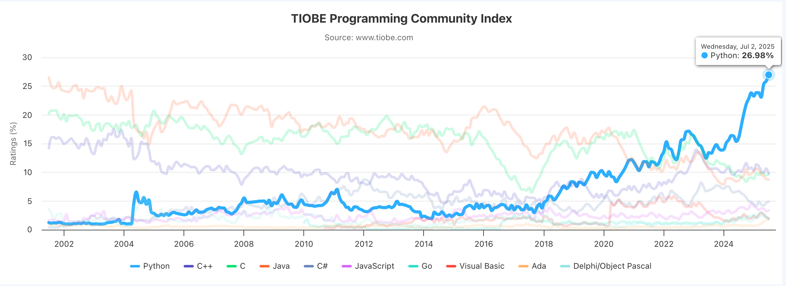
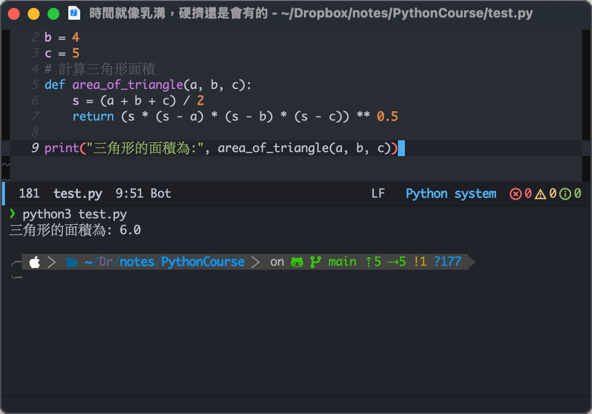
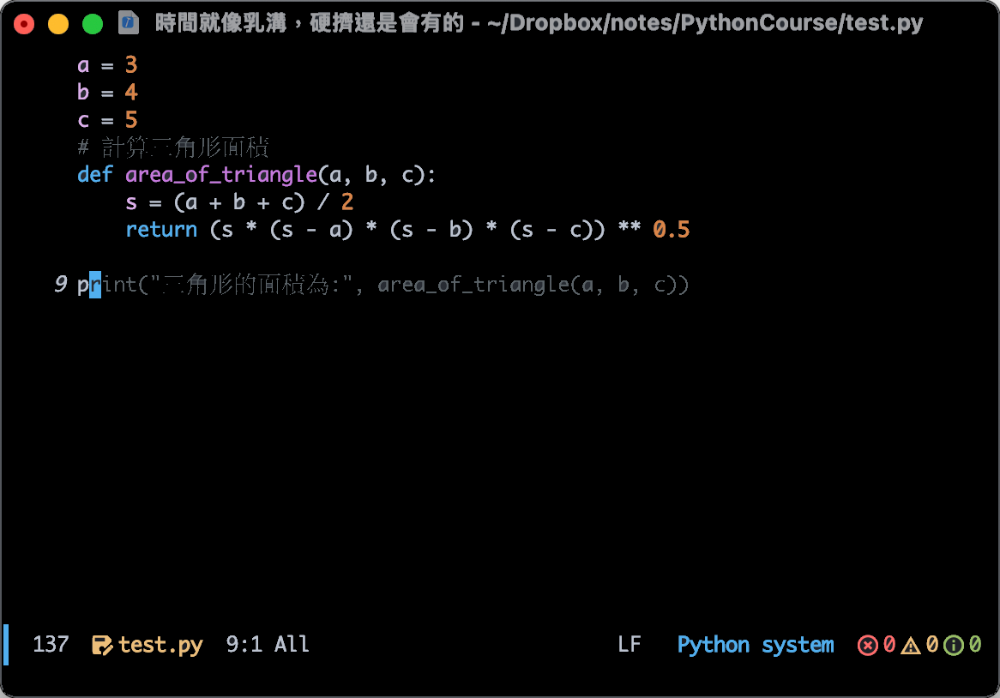
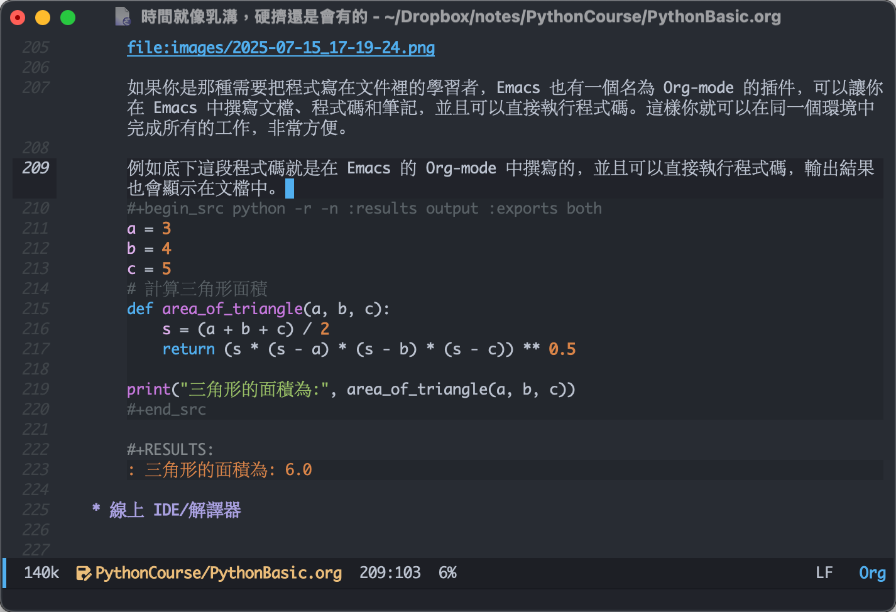
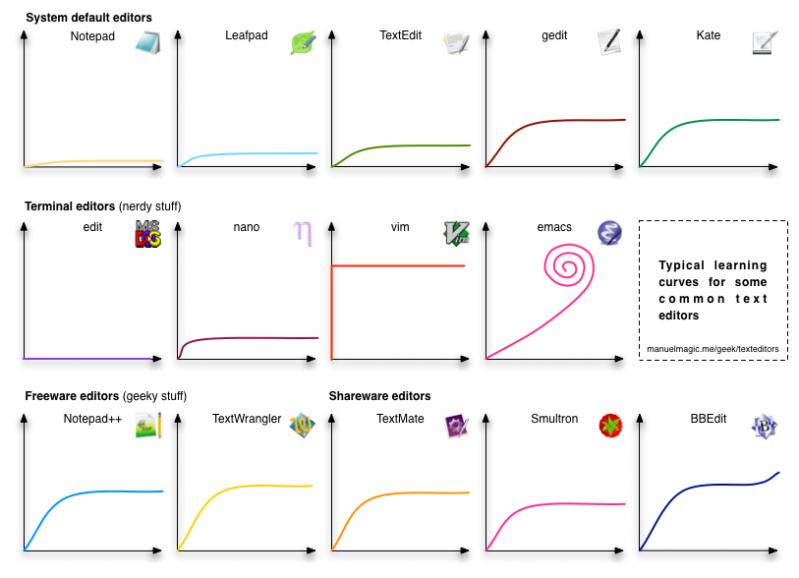
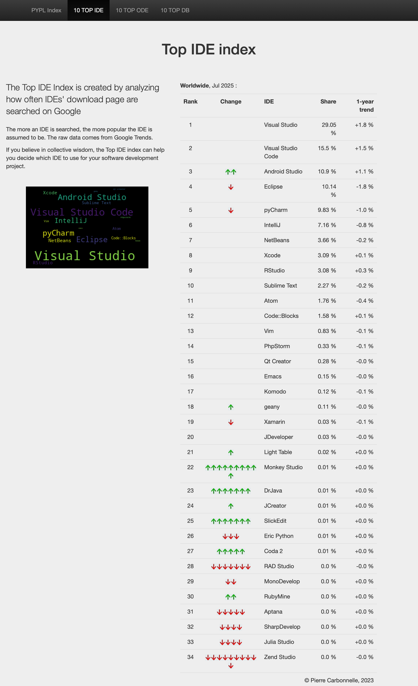
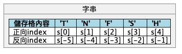
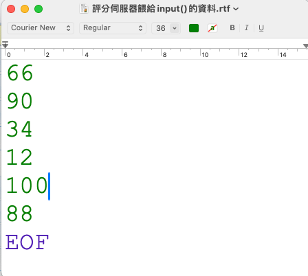

Basic Materials of Python
Table of Contents

1. Python 簡介
1.1. What is Python
Python 是一種進階的直譯語言（scripting language，或譯為腳本語言），常用來整合（glue together）大型軟體元件，支援跨平台、多種中介軟體產品，可應用於各種領域。Python 是一種物件導向語言，具備高階資料結構、動態型別與動態繫結的特性。Python 自 1991 年問世以來，一直擁有非常活躍的使用者社群。如需更多資訊，請參閱 Python 官方網站：http://www.python.org。
1.2. Python 的誕生
1.2.1. 一句話講完一個故事
The Martian: 一個男人在火星上種菜的故事

Python: 一個宅男工程師為了打發聖誔假期打造了一種新的程式語言1。
Guido van Rossum

30 年後，每天都有數百萬人使用他創立的這一新語言。
幾種不同語言受歡迎程度的變化:TIOBE 2001-2025

Figure 2: 2002-2005 TIOBE 語言排行變化
研究人員於 2019 年首次將 5500 萬光年之外黑洞的照片拼湊出來，使用的程式語言也是 Python。


1.2.2. Guido van Rossum 自己的說法
1989 年 12 月，我正在尋找一個「興趣使然」的程式設計專案，好讓我在聖誕節前後那一週能有事可做。
我的辦公室（位於阿姆斯特丹的一間政府研究實驗室）那段期間會關門，
不過我在家裡有一台電腦，手頭上也沒什麼其他事情。
於是我決定動手寫一個我最近一直在構想的新 Script 語言的直譯器：
一個 ABC 語言的後裔，能夠吸引 Unix/C 駭客的注意。
我為這個專案取了個工作名稱叫 *Python*，
當時的我心情略帶戲謔，也因為我是《Monty Python’s Flying Circus》的超級粉絲。
原文：
…in December 1989, I was looking for a “hobby” programming project that would keep me occupied during the week around Christmas.3
My office (a government-run research lab in Amsterdam) would be closed, but I had a home computer, and not much else on my hands. I decided to write an interpreter for the new Script language I had been thinking about lately: a descendant of ABC that would appeal to Unix/C hackers.
I chose Python as a working title for the project, being in a slightly idrreverent mood (and a big fan of Monty Python’s Flying Circus). 4
2. Python 環境建置
目前 Python 已經成為一種非常流行的程式語言，幾乎所有的作業系統都已經內建了 Python 解譯器(interpreter)，所以你可以直接在終端機或命令列中執行 Python 程式碼。但為了方便撰寫與測試 Python 程式碼，通常我們會使用一些整合開發環境(IDE)來撰寫程式碼，這些 IDE 通常會提供語法高亮、程式碼補全、除錯工具等功能，讓我們更容易撰寫與測試程式碼。
除了在單機上執行 Python 程式外，還有許多線上 IDE 也支援 Python 程式的撰寫與執行，這些線上 IDE 通常不需要安裝任何軟體，只要有網路連線就可以使用。最有名的線上 IDE 包括 Google Colab、Jupyter Notebook 等。
2.1. 單機環境建置
當你寫好了一支 Python 程式(如下圖)
1: print('Hello world!') 2: print('我要開始來學習Python')
這段就是 Python 的程式碼，但很可惜的，電腦其實看不懂這段程式碼，此時就需要一個「翻譯」來把這段程式「翻」成電腦看的懂的語言（機器碼），這就是 Python 解譯器在做的事。
目前多數的作業系統(如 Windows, MacOS, Linux)都已內建 Python 解譯器，如果你要手動安裝，可以到官網去下載安裝程式。
有了Python解譯器之後，你就可以開始撰寫如上面的Python程式了，但是要用什麼軟體來撰寫程式碼呢？這就是我們所說的整合開發環境(Development Environment)。
如上所述，既然Python程式碼就只是一些文字，那麼我們可以用任何文字編輯器來撰寫程式碼，像是 Windows 的記事本、MacOS 的 TextEdit…(如下圖，但，相信我，這不會是什麼好主意QQ)。

Figure 3: 以 MacOS 裡的 TextEdit 撰寫 Python 程式
使用上面這種純文字編輯器來撰寫程式碼有幾個缺點:
- 沒有執行環境：需要手動切換到終端機或命令列來執行程式碼，操作不便。
- 沒有語法高亮：程式碼中的關鍵字、變數等不會有顏色區分，閱讀起來不夠清晰。
- 沒有程式碼補全：當你輸入程式碼時，沒有自動補全功能，容易打錯字。
- 沒有除錯工具：如果程式碼有錯誤，沒有提示或建議，除錯過程會很麻煩。
這其中最顯著的缺點就是沒有執行環境，這意味著你必須先將程式碼存成檔案，然後再到終端機或命令列中執行。例如你寫完上面的程式後，就要再打開終端機或命令列，然後輸入以下指令來執行程式碼:
1: python3 hello.py
然後你就會看到終端機或命令列中顯示出程式的輸出結果:
Hello world! 我要開始來學習Python
這樣的操作雖然可以完成程式的執行，但對於初學者來說，操作起來會有點麻煩，尤其是當你需要不斷修改程式碼並重新執行時。所以就有了更方便的方式來撰寫與執行 Python 程式碼，那就是使用整合開發環境(IDE)。
2.1.1. IDE
雖然我們可以用一般的文字編輯器來寫程式，但正所謂「工欲善其事、必先利其器」，有更好的工具可用，我們為什麼要將就用一些勉強堪用的工具呢？
程式設計師是一群非常 懒惰 重視工作效率的人類，他們可以用五年來開發一個工具，只是為了將來的工作能節省五分鐘，於是這世界就存在了一些專門用來輔助程式設計師寫程式的應用程式。
但是如果只是把它叫做「寫程式的程式」，一來整個格調就沒了，二來還要先解釋哪個是名詞哪個是動詞。
於是，聰明的程式設計師給它取了一個聽起來比較厲害的名字: 整合式開發環境(Integrated Development Environment, IDE)。
市面上常見的、可以拿來寫 python 的 IDE 有以下幾種:
Visual Studio Code
這是一個由微軟開發的免費開源編輯器，支援多種程式語言，包括 Python。它提供了強大的擴充功能，可以安裝各種插件來增強功能，如語法高亮、程式碼補全、除錯工具等。如果你有GitHub copilot的話，還可以使用它來自動補全程式碼。官網: https://code.visualstudio.com/

Figure 4: 以 Visual Studio Code 撰寫 Python 程式
PyCharm
PyCharm 是 JetBrains 公司開發的一款專門用於 Python 開發的 IDE。它提供了強大的功能，如語法高亮、程式碼補全、除錯工具、版本控制等。PyCharm 有免費的社群版和付費的專業版，社群版已經足夠用來學習和開發 Python 程式。官網: https://www.jetbrains.com/pycharm/

Figure 5: 以 PyCharm 撰寫 Python 程式
Emacs
Emacs 是一個非常強大的文字編輯器，支援多種程式語言，包括 Python。它有一個名為 Emacs Python Mode 的套件(package)，可以提供語法高亮、程式碼補全、除錯工具等功能。Emacs 的學習曲線比較陡峭，但一旦掌握了，就可以非常高效地編寫 Python 程式。官網: https://www.gnu.org/software/emacs/

Figure 6: 以 Emacs 撰寫 Python 程式
Emacs也支援AI輔助撰寫程式，例如使用 Copilot 或 ChatGPT 等 AI 工具來自動補全程式碼，這樣可以大大提高編寫程式的效率。例如:

Figure 7: 以 Emacs 與 Copilot 撰寫 Python 程式
如果你是那種需要把程式寫在文件裡的學習者，Emacs 也有一個名為 Org-mode 的package，可以讓你在 Emacs 中撰寫文件、程式碼和筆記，並且可以直接執行程式碼。這樣你就可以在同一個環境中完成所有的工作，非常方便。
例如底下這段程式碼就是在 Emacs 的 Org-mode 中撰寫的，並且可以直接執行程式碼，輸出結果也會顯示在文件中。
1: a = 3 2: b = 4 3: c = 5 4: # 計算三角形面積 5: def area_of_triangle(a, b, c): 6: s = (a + b + c) / 2 7: return (s * (s - a) * (s - b) * (s - c)) ** 0.5 8: 9: print("三角形的面積為:", area_of_triangle(a, b, c))
三角形的面積為: 6.0
Emacs Org-mode的程式編寫環境如下圖所示：

Figure 8: Emacs Org-mode 中的 Python 程式編寫環境
事實上，早在 1980 年代，Emacs 就已經是一個非常強大的編輯器了，它支援多種程式語言的編輯和執行，並且有許多插件可以擴展其功能，許多使用者甚至認為Emacs是一個擁有編輯器功能的作業系統，其彈性與強大功能由此可見。在當時能與Emacs對抗的編輯器只有 Vim：Vim號稱「編輯器之神」；而Emacs則是「神的編輯器」，兩者的粉絲經常互相爭論誰才是最好的編輯器。
Figure 9: Vim, Emacs v.s. nano
聽起來很完美是吧，但是要當神是要付出代價的，Emacs 的學習曲線非常陡峭，需要花費大量時間來學習和適應它的操作方式。Emacs 的操作方式與其他編輯器有很大的不同，它使用了許多快捷鍵和命令，這些快捷鍵和命令需要花時間去記憶和練習。以下是典型的幾種文字編輯器學習曲線比較圖：

Figure 10: Emacs 與其他編輯器的學習曲線比較
天下沒有白吃的午餐，Emacs 除了學習曲線非常陡峭，許多操作都需要大量的複合按鍵（例如Ctrl-x Ctrl-f），這對於初學者來說可能會感到困惑和不便。此外，Emacs 的界面也比較簡單，沒有像其他 IDE 那樣的圖形化界面，這可能會讓一些使用者感到不習慣，需要花費大量時間來學習和適應它的操作方式。
所以，如果你是初學者，還是建議先從其他 IDE 開始學習，等到閒著沒其他事可做了再來浪費時間研究Emacs吧。畢竟根據PYPL(PopularitY of Programming Language)的統計，目前Emacs的市佔率僅有 0.15%，排名第16位，而 Visual Studio與Visual Studio Code則分列前兩名，市佔率分別是30%、160%6。

Figure 11: PYPL IDE Index
2.2. 線上 IDE/解譯器
前述的 IDE 一來要下載、二來要安裝，對於初學者來說委實有點麻煩，於是腦筋動的快的商人就看到了這個商機，把 IDE 做成了網頁服務的型式，如此一來只要能上網就可以寫程式了，只要能克服手機或平板的輸入，你甚至可以在這些裝置上寫程式。
這些線上 IDE 通常提供了 Python 解譯器，可以直接在瀏覽器中撰寫和執行 Python 程式碼，並且支援多種 Python 版本。以下是一些常見的線上 IDE：
2.2.1. Online-Python
這是一個線上 Python 編輯器和執行環境，提供了簡單易用的介面，可以直接在瀏覽器中撰寫和執行 Python 程式碼。它支援多種 Python 版本，並且可以儲存程式碼到雲端。官網: https://www.online-python.com/

Figure 12: 以 Online Python 撰寫 Python 程式
2.2.2. Google Colab
Google Colab 是 Google 提供的一個線上 Jupyter Notebook 環境，可以用來撰寫和執行 Python 程式碼。它支援多種 Python 版本，並且可以使用 Google Drive 儲存程式碼和資料。Colab 還提供了 GPU 和 TPU 支援，可以用來加速深度學習模型的訓練。如果你是AI的初學者，Colab 絕對是你的首選，因為它提供了許多現成的範例和教學資源，可以幫助你快速入門。Colab 還支援與其他 Google 服務的整合，如 Google Sheets、Google Drive 等，可以方便地存取和處理資料。官網: https://colab.research.google.com/。
h#+CAPTION: 以 Google Colab 撰寫 Python 程式

3. 輸出
為什麼要寫程式？不外乎是想解決某些問題，而最終的結果應如何呈現？也許是機棫做出某些動作、發出某些聲音、創作出一幅圖畫、輸出一篇文章、讓ESP32控制一個機器人、或是讓 Raspberry Pi 控制一個燈泡等等，這些都是輸出(output)的方式。輸出可以是任何形式的結果呈現，甚至是將資料存入檔案或資料庫中，或是將資料傳送到其他裝置或系統中。
以上這些都屬於輸出，而最常見的輸出就是將結果以文字形式呈現在電腦螢幕上，在 C++，我們可以用 cout 或 printf() 來達成這個目的，在 Python 則是 print()。
3.1. 基本輸出
3.1.1. C/C++
1: #include <iostream> 2: using namespace std; 3: int main() { 4: cout << "Hellow world!"; 5: }
Hellow world!
3.1.2. Python
輸出文字時，前後加上"或是’
在 Python 中，輸出文字時可以使用單引號(’)或雙引號(")來包裹文字，這樣就可以讓 Python 解譯器知道這是一段文字，而不是變數或其他語法。
1: print("Hello world!")
Hello world!
也可以輸出數字或運算式
在 Python 中，print() 函式可以輸出任何類型的資料，包括數字、運算式等。當輸出數字時，Python 會自動將其轉換為字串形式。
1: print(3.1415) 2: print(10*10*3.1416) 3: print((1+3)/20)
上面那段程式碼會輸出以下結果:
3.1415 314.15999999999997 0.2
而這些結果都是以字串形式輸出的，Python 會自動將數字轉換為字串。
print()裡可以用逗號連接不同類型的資料
在 Python 中，print() 函式可以接受多個參數，如果使用逗號來連接不同類型的資料，在輸出時會自動加上空格作為分隔符號。
1: print('半徑為',10,'的圓，其面積為:',10*10*3.14)
請留意如下輸出中的10，其前後有空格，這是因為 在上面的程式中，print() 函式使用了逗號作為分隔符號。
半徑為 10 的圓，其面積為: 314.0
多個指令也可以寫在一行
但要以分號間隔(是的，像 C/C++那樣….)
1: print("hi"); print("how are you?")
hi how are you?
3.2. 進階輸出
3.2.1. 語法
- print( 項目 1, [ 項目 2, … , sep = 分隔字元 , end = 結束字元 ] )
- sep (分隔字元) 預設為空白字元
- end (結束字元) 預設為換行字元\n
3.2.2. 範例
1: a, b, c = 5, 10, 20 2: print(a, b, c) 3: print('完全不呈現預設的空白: ',a, b, c, sep ='') 4: print('以逗號來當分隔符號: ',a, b, c, sep =',') 5: print('==測試end的用法1==') 6: print(a, end='\n') #end預設值為跳行，這和 print(a)是一樣的 7: print(b, end='\n') 8: print(c, end='\n') 9: print('==測試end的用法2==') 10: print('不進行跳行: ', a, end=' ') 11: print(b, end=' ') 12: print(c, end=' ')
5 10 20 完全不呈現預設的空白: 51020 以逗號來當分隔符號: ,5,10,20 ==測試 end 的用法 1== 5 10 20 ==測試 end 的用法 2== 不進行跳行: 5 10 20
3.2.3. 跳脫字元

所謂跳脫字元(escape character)，就是在字串中使用特殊符號來表示一些特殊的字元，例如換行符號(\n)、tab符號(\t)、單引號(\’)、雙引號(\“)等。這些特殊符號可以讓我們在字串中包含一些無法直接輸入的字元。
在 Python 中，跳脫字元通常以反斜線(\)開頭，後面跟著一個或多個字元。
如果要輸出單引號(’)或雙引號(”)，除了使用跳脫字元(\)，也可以利用單引號、雙引號互換的作法，如下例：
1: #使用跳脫字元\ 2: print("他說：\"好，我試試!!\"，然後他就逝世了。") 3: #外層使用單引號 4: print('他說："好，我試試!!"，然後他就逝世了。') 5: #單引號、雙引號互換的作法 6: print("他說：'好，我試試!!'，然後他就逝世了。")
他說："好，我試試!!"，然後他就逝世了。 他說："好，我試試!!"，然後他就逝世了。 他說：'好，我試試!!'，然後他就逝世了。
- 進階閱讀: CRLF、CR、LF詳解
3.2.4. 課堂練習
請以 print()輸出以下文字
Your brain has two parts: the left and the right.
Your left brain has nothing “right”, and your right brain has nothing “left”.
3.3. f-string
f-string 是 Python 3.6 以後新增的字串格式化方法，它可以讓我們在字串中直接嵌入變數，並且可以控制輸出的格式。f-string 的語法是以字母 f 開頭，然後在字串中使用大括號({})來包裹變數或表達式。
由於 f-string 轉換時會做最佳化，其速度會比前面的文字格式化稍稍快一點。
3.3.1. 輸出一個數字，不控制格式
1: score = 83 2: print(score) 3: print(f'{score}')
83 83
3.3.2. 輸出一個數字並控制輸出到小數點第二位
1: height = 168.3 2: 3: print(f'{height:.2f}') 4: # 加入文字 5: print(f'身高為:{height:.2f}')
168.30 身高為:168.30
3.3.3. 輸出兩個變數並控制輸出格式
1: weight = 65.33 2: height = 168.33 3: # 不跳行,加逗號 4: print(f'{height:.2f}, {weight:.3f}') 5: # 跳行 6: print(f'{height:.2f}\n{weight:.3f}') 7: # 跳行並加入說明文字 8: print(f'身高:{height:.2f}\n體重:{weight:.3f}')
168.33, 65.330 168.33 65.330 身高:168.33 體重:65.330
3.3.4. 輸出三個不同型別的變數
1: name = 'Vanessa' 2: height = 165 3: weight = 52.3 4: print(f'{name}的身高是{height}公分、體重是{weight:.2f}公斤')
Vanessa 的身高是 165 公分、體重是 52.30 公斤
3.3.5. 如何控制輸出字串的靠齊方向
和數字輸出一樣，我們可以預留一些空間給文字輸出，並控制文字的靠齊方向，例如
- {:>}: 向右靠
- {:<}: 向左靠
- {:^}: 置中對齊
下例中我們預留了 8 個空格來顯示姓名(name) ,並要求向右對齊
1: name1 = 'James' 2: name2 = 'Vanessa' 3: height1 = 165 4: weight1 = 52.3 5: height2 = 175 6: weight2 = 72.3 7: print(f'{name1:>8}的身高是{height1:>6}公分、體重是{weight1:10.2f}公斤') 8: print(f'{name2:>8}的身高是{height2:>6}公分、體重是{weight2:10.2f}公斤')
James 的身高是 165 公分、體重是 52.30 公斤 Vanessa 的身高是 175 公分、體重是 72.30 公斤
3.4. 其他格式化輸出方法
3.4.1. 格式化輸出: format() (新版)
format() 是 Python 2.7 以後新增的字串格式化方法，它可以讓我們在字串中使用大括號({})來包裹變數，並且可以控制輸出的格式。format() 的語法是字串.format(變數1, 變數2, …)，其中變數可以是任何類型的資料，包括數字、字串、列表、字典等。
- 語法
- format 格式化輸出語法：print(字串.format(變數))
- 字串裡以{0}、{1}、… 來對應參數列裡的變數
- 格式控制：print(’{0:控制字串}’.format(參數))
- format 格式化輸出語法：print(字串.format(變數))
3.4.2. format()輸出範例
輸出一個數字，不控制格式
1: score = 83 2: print(score) 3: print('{}'.format(score))
83 83
輸出一個數字並控制輸出到小數點第二位
1: height = 168.3 2: 3: print('{0:.2f}'.format(height)) 4: # 上一行{}中的0代表該處要輸出format()中的第0個變數，只有一個時也可以省略 5: print('{:.2f}'.format(height)) 6: 7: # 加入文字 8: print('身高為:{:.2f}'.format(height))
168.30 168.30 身高為:168.30
輸出兩個變數並控制輸出格式
1: weight = 65.33 2: height = 168.33 3: # 不跳行 4: print('{0:.2f}{1:.3f}'.format(height, weight)) 5: # 跳行 6: print('{0:.2f}\n{1:.3f}'.format(height, weight)) 7: # 跳行並加入說明文字 8: print('身高:{0:.2f}\n體重:{1:.3f}'.format(height, weight))
168.3365.330 168.33 65.330 身高:168.33 體重:65.330
輸出三個不同型別的變數
1: name = 'Vanessa' 2: height = 165 3: weight = 52.3 4: print('{0}的身高是{1}公分、體重是{2:.2f}公斤'.format(name, height, weight))
Vanessa 的身高是 165 公分、體重是 52.3000 公斤
如何控制輸出字串的靠齊方向
和數字輸出一樣，我們可以預留一些空間給文字輸出，並控制文字的靠齊方向，例如
- {:>}: 向右靠
- {:<}: 向左靠
- {:^}: 置中對齊
下例中我們預留了 8 個空格來顯示姓名(name) ,並要求向右對齊
1: name1 = 'James' 2: name2 = 'Vanessa' 3: print('My name is {0:>8}. Nice to meet you.'.format(name1)) 4: print('My name is {0:>8}. Nice to meet you.'.format(name2))
My name is James. Nice to meet you. My name is Vanessa. Nice to meet you.
3.4.3. 格式化輸出: Template
Template 是 Python 2.4 以後新增的字串格式化方法，它可以讓我們在字串中使用 $ 符號來包裹變數，並且可以控制輸出的格式。Template 的語法是字串.Template(變數)，其中變數可以是任何類型的資料，包括數字、字串、列表、字典等。
1: from string import Template 2: 3: name = 'TNFSH' 4: tmp = Template('Hello, $who') 5: print(tmp.substitute(who = name)) 6:
Hello, TNFSH
3.4.4. 格式化輸出: % (舊版)
% 是 Python 2.x 版本的字串格式化方法，它可以讓我們在字串中使用百分號(%)來包裹變數，並且可以控制輸出的格式。% 的語法是字串 % (變數1, 變數2, …)，其中變數可以是任何類型的資料，包括數字、字串、列表、字典等。
- 語法
- 格式化輸出語法：print( 字串 %(參數) )
- 字串裡 %s 代表字串、%d 代表整數、%f 代表浮點數
- 格式化輸出語法：print( 字串 %(參數) )
範例
1: name = '台北101' 2: height = 508 3: fee = 18.24 4: print('%s的高度為%d公尺，參觀門票為%8.2f美金.' %(name, height, fee)) 5: print('%s的高度為%d公尺，參觀門票為%0.2f美金.' %(name, height, fee))
台北 101 的高度為 508 公尺，參觀門票為 18.24 美金. 台北 101 的高度為 508 公尺，參觀門票為 18.24 美金.
4. 變數
想法: 讓底下的程式碼更有彈性些，可以算任何的半徑值….
1: print('半徑為',10,'的圓，其面積為:',10*10*3.14)
以變數來值存半徑
1: r = 10 2: print('半徑為',r,'的圓，其面積為:',r*r*3.14) 3: r = 20 4: print('半徑為',r,'的圓，其面積為:',r*r*3.14) 5: r = 30 6: print('半徑為',r,'的圓，其面積為:',r*r*3.14)
變數是一種用來儲存資料的容器，它可以讓我們在程式中使用這些資料，而不需要每次都重新計算或輸入。變數可以儲存任何類型的資料，包括數字、字串、列表、字典等。
4.1. 變數的指派(assign)
- 指派(assign)是將一個值(或運算式)指派給一個變數的過程。
- 和C/C++不同，Python 變數不需宣告，依指派值自動設定資料型態(dynamically typing)。
語法
變數名稱 = 指派值- 變數不再使用時，可用 del 指令將其刪除，以節省記憶體。
- 範例：
1: a = 5 2: b = 3.14 3: c = 'TNFSH' 4: a = b = c = 10 5: a += 1 # 相當於 a = a + 1，還有 -=, *=, /= 6: name, number = 'TNFSH', 35 # 多個變數一同指派 7: quotient, mod = divmod(10, 3) 8: print(quotient) 9: print(mod) 10: del c 11: print(name) 12: # swap交換兩個變數的值 13: print(a, b) 14: a, b = b, a 15: print(a, b)
3 1 TNFSH 11 10 10 11
變數,顧名思義，它的儲存內容會改變，所以有時我們會看到這種在數學定義中看起來予盾的運算式
1: a = 3 2: a = a + 10
這是因為等號(=)的意思是指定，而且 Python 的直譯器會先將=右側的結果運算出來，再將結果 assign 給=左側的變數
- 先看看以下的程式碼(複製程式碼、貼到你的編輯器上)
- 再猜一猜執行結果
- 最後再執行，看看你有沒有猜對
1: score = 10 2: score = score + 5 3: score = score * 6 4: print(score)
4.2. 變數的命名規則
和C/C++一樣的，變數的命名規則如下:
- 由英文、數字、底線、中文(不建議)組成
- 不得以數字開頭
- 不能與 Python 內建的保留字相同
4.2.1. 範例
| Example | ✓ / × |
|---|---|
| abc_123 | ✓ |
| 3pigs | × |
| Happy New Year | × |
| Class | × |
| Good! | × |
4.3. 變數的各種資料型態
Python的變數型態是動態的(dynamically typed)，這意味著在程式執行時，變數的型態可以隨時改變。Python 會根據變數所儲存的值自動判斷其型態，而不需要在宣告變數時指定型態。
4.3.1. 變數型態的判斷: type()
既然是動態的，那麼我們如何知道變數的型態呢？Python 提供了 type() 函式來判斷變數的型態。
1: print(type(2020)) 2: print(type(3.1416)) 3: print(type('Hello world'))
4.3.2. 常用類型
以 Python 3.6 為例，常用的資料型態有:
- 整數: int
- 浮點數: float
- 布林值(True / False): bool, T 與 F 要大寫
- 字串: str, 以’或"含括,若輸出字串要包含引號，則以另一種引號含括該字串，或是在前面加上跳脫字元（\)。
1: age = 18 2: weight = 67.87 3: good_words = " 請常說'請'、'謝謝'、'對不起' " 4: other_words = "請常說\"請\"、\"謝謝\"、\"對不起\"" 5: print(type(age)) 6: print(type(weight)) 7: print(type(good_words)) 8: print(other_words)
<class 'int'> <class 'float'> <class 'str'> 請常說"請"、"謝謝"、"對不起"
- 序列型態: list, tuple
- 集合型態: set
- 對映型態: dict
4.3.3. 型態轉換
在 Python 中，變數的型態可以隨時轉換，這稱為型態轉換(type conversion)。Python 提供了幾個內建函式來進行型態轉換，例如 int()、float()、str() 等。
- 自動轉換
1: score = 60 2: print(type(score)) 3: score = score + 3.5 # 自動轉換為浮點數，結果為63.5 4: print(type(score))
<class 'int'> <class 'float'>
- 強制轉換
1: score = int(30.22) # 將括弧內的資料轉換為整數 2: score = float(score) # 將括弧內的資料轉換為浮點數 3: test = str(score)# 將括弧內的資料轉換為字串
5. 輸入
在上一個版本的程式中，我們使用變數來儲存半徑的值，這樣就可以讓程式更有彈性，可以計算不同半徑的圓面積。但是，這樣還是需要我們手動修改程式碼中的變數值，才能計算不同半徑的圓面積：
想法: 讓前一版的程式更有彈性
1: print('半徑為',10,'的圓，其面積為:',10*10*3.14)
如果我們可以讓 使用者 在 每次執行程式時 輸入半徑的值，那麼程式就可以自動計算不同半徑的圓面積，而不需要修改程式碼。這就是輸入(input)的概念。
請試著執行以下程式碼，看看它的輸入與輸出結果：
1: r = input() 2: print('半徑為',r,'的圓，其面積為:',r*r*3.14)
如果你執行了上面的程式碼，你會發現它會要求你輸入一個值，然後將這個值用來計算圓的面積。但是，這樣的程式碼有一個問題，就是它沒有將輸入的值轉換為數字型態，所以當你輸入一個數字時，它會將這個數字視為字串，導致計算結果不正確。
要解決這個問題，我們需要將輸入的值轉換為數字型態。Python 提供了 int() 和 float() 函式來將字串轉換為整數或浮點數。以下是修正後的程式碼：
1: r = input() 2: r = int(r) 3: print('半徑為',r,'的圓，其面積為:',r*r*3.14)
上述程式中的前兩行也可以寫成一行
1: r = int(input()) 2: print('半徑為',r,'的圓，其面積為:',r*r*3.14)
5.1. 輸入/input(): 基本輸入與型別轉換
Python使用 input() 函式來讀取使用者輸入的資料。這個函式會等待使用者輸入一行文字，然後將這行文字作為字串傳回。需要注意的是，input() 函式讀取的資料型態是字串(str)，如果需要其他型別的資料，需要進行型別轉換。
5.1.1. 語法/範例
語法
1: variable = input([提示字元])
- PS: 經由 input( )函式讀入的資料，其資料型態皆為字串
- 如果你在語法中看到[]，表示這個參數是可選(optional)的，可以省略。
範例
1: a = input('輸入國文成績:') 2: b = input('輸入數學成績:') 3: c = input() 4: print('三科成績分別為%5s %5s %5s' %(a, b, c))
5.1.2. 輸入搭配型別轉換
1: a = int(input('輸入國文成績:')) 2: b = int(input('輸入數學成績:')) 3: c = int(input()) 4: print('總分為%5d' %(a+b+c))
5.2. 進階輸入處理
python 的 input()函數每次讀入一行資料，直到換行為止，但如果這行資料裡就包含了許多變數，那就應該先把字串切割(split())成許多子部份，然後視需要另做型別轉換。
5.2.1. input syntax:
1: input().split(separator, maxsplit)
- seperator (optional): separator (optional)- The is a delimiter. The string splits at the specified separator. If the separator is not specified, any whitespace (space, newline etc.) string is a separator.
- maxsplit (optional): The maxsplit defines the maximum number of splits. The default value of maxsplit is -1, meaning, no limit on the number of splits.
- Return Value from split(): The split() breaks the string at the separator and returns a list of strings.
5.2.2. 適用狀況
假設我們面對兩種不同的資料輸入方式：
狀況一：輸入的資料為三個成績同時寫在一行(以空白分隔)
1: 23 45 66
狀況二：三個成績分為三列(每次都按 enter)
1: 23 2: 45 3: 66
對 C/C++來說，這並不是什麼特別的問題，上述兩種狀況都可以用三個 cin 將成績讀進程式：
1: #include <iostream> 2: using namespace std; 3: int main() { 4: int a, b, c; 5: cin >> a >> b >> c; 6: }
但是對 python 來說，如果針對狀況一的資料以下列方式讀入
1: scoreX = input() #一次把整列資料讀完 2: scoreY = input() #沒資料可以讀 3: scoreZ = input()
則 scoreX 的值會變成字串’23 45 66’，而 scoreY, scoreZ 會沒有值，因為這行裡的所有資料全部被讀入 scoreX 中。
5.2.3. 解決方案
作法 1:
讀入整行字串後，
再以字串分割處理，最後將分割後的字串分別 assign 給不同的變數。例如已知第一行有三個值，則可以先準備好三個變數來儲存被 split 切割後的三個值
1: scoreX, scoreY, scoreZ = input().split()
作法 2:
先把段輸入存成一個字串變數(inp)，再對這個變數做 split，從這裡我們也可以隠約了解 split()這個 function 是 字串變數 專屬的 function(split()是 python 字串的切割 function，進階閱讀)。
1: inp = input() #先把輸入的字串存到字串變數inp裡 2: a, b, c = inp.split() #再用split()去切割inp字串， 3: # 依此類推逐一取得輸入值 4: a = int(a) 5: b = int(b) 6: c = int(c)
作法 3:
也可以用一個 list 來儲存所有被 split 切割的值，最後再由 list 來取得值(詳見本章 資料型別 中的 串列List )
作法 4:
前提為所要輸入的資料都可以轉換成整數，請自行 google 有關 map 的進階用法
1: scoreX, scoreY, scoreZ = map(int, input().split())
作法 5:
在一行輸入不定個數的整數
1: a = [int(x) for x in input().split()]
- 得到的 a 為 int list
- 可以想像為集合表示法 s = {x | 1<x<n }，所有符合 1<x<n 的 x 所組成的集合
6. try-exception
測試一下底下的程式：
1: import math 2: instr = input() #輸入a9 3: score = float(instr) #出問題了 4: 5: score = math.sqrt(score)*10 6: print('{0:.4f}'.format(score))
如果你輸入了 10，程式會輸出 314.0，但如果你輸入了 a9，程式就會 crash 掉，因為 Python 無法將字串 a9 轉換成數字(程式第3行)，也因此變數score無法被賦值(assign value)。此時程式就會發生錯誤並停止執行，並出現類似如下的錯誤訊息：
Traceback (most recent call last):
File "main.py", line 3, in <module>
score = float(instr)
ValueError: could not convert string to float: 'a9'
對於寫程式的人來說，這樣的錯誤雖然常見，而且明顯是因為使用者的輸入錯誤所導致，但
使用者永遠是對的
程式執行到當掉是不允許的
為了避免發生這種情況，Python 提供了 try-except 機制來處理可能發生的錯誤。這樣可以讓程式在遇到錯誤時不會直接崩潰，而是可以給使用者一個友好的提示或進行其他處理。
- 大部分執行中的錯誤， Python 直譯器 (interpreter) 會以發起例外 (exception) 的方式來中斷程式的執行。
- 凡是可能會產生例外的程式碼， Python 利用 try-except 陳述 (try-except statement) 讓程式設計師自行處理例外。 try-except 為關鍵字 (keyword) 之一，專門用來例外處理 (exception handling) 的。
- 進階: Python Try Except
6.1. 解決上述問題
為了解決上述問題，我們可以使用 try-except 來捕捉可能發生的錯誤，並給出適當的提示。以下是修改後的程式碼：
1: import math 2: 3: instr = input() #輸入a9 4: 5: try: 6: score = float(instr) 7: score = math.sqrt(score)*10 8: print(score) 9: except: 10: print("Error")
Error
在上述程式中，我們使用了 try-except 來捕捉可能發生的錯誤。如果在 try 區塊中的程式碼發生錯誤，Python 會跳到 except 區塊執行，並輸出 “Error”。這樣就避免了程式直接崩潰的情況。
6.2. 注意事項
並不是有了 try…except 就天下太平了，試著執行下列程式
1: import math 2: 3: try: 4: score = int(input()) #輸入 xyz 5: except: 6: print('error') 7: 8: print(math.sqrt(score))
想一下為什麼程式還是 crash 掉….
以上述程式為例，我們基本上有以下幾種解決方案：
- 在 except 區塊中加入一個 return 或 exit()
即，在except 區塊中處理完錯誤（如輸出提示錯誤訊息）後，明確地終止程式執行，以防止程式碼繼續執行到依賴於 try 區塊成功結果的部分，也就是print(math.sqrt(score))。 - 把 print(math.sqrt(score)) 放在 try 區塊中
將所有依賴於 try 區塊中可能成功操作的程式碼（包括後續的計算和輸出），都放在 try 區塊內部。這樣，一旦 try 區塊中的任何一行程式碼引發例外，程式就會立即跳轉到 except 區塊，而不會執行 try 區塊中剩餘的、依賴於錯誤結果的程式碼。 - 把原本的 print(math.sqrt(score)) 放在一個檢查 score是否為數字的條件判斷中
雖然可以在 except 區塊之外添加條件判斷（例如檢查 score 變數是否已定義，或者它的值是否有效），但這不是 Python 處理例外的慣用方法。Python 鼓勵使用 try-except 來處理預期之外的錯誤，而不是預先進行大量的條件檢查。 把input()放在一個while迴圈中，直到使用者輸入正確的數字為止
使用 while 迴圈結合 try-except 實現一個有效的輸入驗證機制。在 try 區塊中嘗試轉換輸入，如果成功則 break 離開迴圈；如果發生錯誤，則在 except 區塊中提示使用者重新輸入，並繼續迴圈，直到輸入有效為止。這能提供更好的使用者體驗。
例如類似如下的程式架構：
1: import math 2: while True: 3: try: 4: score = int(input("請輸入一個整數: ")) # 輸入整數 5: break # 如果成功，跳出迴圈 6: except ValueError: # 捕捉特定的錯誤類型 7: print("輸入錯誤，請重新輸入一個整數。") 8: print(math.sqrt(score))
6.3. 指定具體的例外類型
我們也可以在except後面指定具體的例外類型，這樣可以更精確地捕捉特定的錯誤。例如：
1: import math 2: 3: instr = input() #輸入a9 4: 5: try: 6: score = float(instr) 7: score = math.sqrt(score)*10 8: print(score) 9: except ValueError: # 專門捕捉 ValueError 10: print("輸入的不是有效的數字。") 11: except TypeError: # 範例，如果 math.sqrt() 收到不兼容的類型 12: print("數值類型錯誤，無法計算。") 13: except Exception as e: # 捕捉所有其他未預期的錯誤，並打印錯誤訊息 14: print(f"發生了未預期的錯誤: {e}")
這樣可以根據錯誤類型給出更精確的提示。
6.4. try-except-else
在 Python 中，try-except 還可以搭配 else 使用。else 區塊會在 try 區塊中的程式碼沒有引發任何例外時執行。這樣可以讓我們在沒有錯誤的情況下執行一些額外的程式碼。
1: import math 2: 3: instr = input() 4: 5: try: 6: score = float(instr) 7: except ValueError: 8: print("輸入的不是有效的數字。") 9: else: # 如果 try 區塊沒有發生錯誤，則執行這裡 10: if score >= 0: # math.sqrt 不接受負數 11: result = math.sqrt(score) * 10 12: print(f'{result:.4f}') 13: else: 14: print("輸入的數字不能是負數。") 15: # 注意：如果 math.sqrt(score) 也在 try 區塊內，則不需要在這裡檢查負數
6.5. try-except-finally
finally 區塊中的程式碼無論是否發生例外都會執行。它常用於清理資源，例如關閉文件或網絡連接。
1: try: 2: f = open("myfile.txt") 3: # 讀取文件 4: except FileNotFoundError: 5: print("檔案不存在。") 6: finally: 7: if 'f' in locals() and not f.closed: # 確保 f 已定義且未關閉 8: f.close() # 無論如何都要關閉文件
6.6. 如果有很多個變數需要檢查例外呢
也許你可以一個一個去變更資料類型，如果出問題後就 結束 程式，不要再往下執行，在 python 中，你可以透過呼叫 sys 模組中的 exit()或是 os 模組中的_exit()來終止程式，例如在print(’error’)後就結束程式，這樣就，詳情請自行參閱這篇。
或者，你更應該自己透過關鍵字去膜拜一下 Google 大神，例如 python stop program 之類的….
6.6.1. 提示
回顧一下一年級學 C/C++時，有提及 if 的巢狀寫法，例如
1: #include <iostream> 2: using namespace std; 3: int main() { 4: cin >> a > >b; 5: if (a>=60) { 6: if (b>=60) { 7: cout << "all pass"; 8: } else { 9: cout << "第2科掛了"; 10: } 11: } else { 12: cout << "第1科掛了"; 13: } 14: }
你可以想一下能不能把 這種寫法套用在 try…except 上。
6.7. 進階閱讀
7. 註解
Python的註解方式與C/C++有些不同，主要有兩種方式：
- 單行註解：以 # 開頭，後面跟著註解內容。
- 多行註解：可以使用三個單引號（’’’）或三個雙引號（“”"）來包裹多行註解內容。
7.1. 語法
這兩種註解的語法如下：
- 單行註解：以 # 開頭
- 多行註解：前後以 ’’’ 或 “”" 含括
7.2. 範例
1: ## 這是單行註解 2: int a = 3 3: ''' 4: 這是多行註解 5: LALALA 6: ''' 7: print(a) 8: """ 9: 這也是註解 10: 可以放多行 11: """
8. 運算元與運算式
8.1. 算術運算
Python 支援多種算術運算，以下是常用的算術運算子：
- +: 加
- -: 減
- *: 乘
- /: 除
- %: 取餘數
- //: 求商
- **: 指數
8.1.1. 算術運算範例#1
1: # python code for arithematic opearation 2: print(5+3) 3: print(5-3) 4: print(5*3) 5: print(5/3) 6: print(5%3) 7: print(5//3) 8: print(5**3)
8 2 15 1.6666666666666667 2 1 125
8.1.2. 算術運算範例#2
1: a = int(input("input a: ")) 2: op = input("input op: ") 3: b = int(input("input b: ")) 4: 5: if op == '+': 6: ans = a + b; 7: elif op == '-': 8: ans = a - b; 9: elif op == '*': 10: ans = a * b; 11: elif op == '/': 12: ans = a / b; 13: elif op == '%': 14: ans = a % b; 15: 16: print(str(a) + op + str(b) + "=" + str(ans)) 17:
8.1.3. 字串運算
1: print("Python"+"基礎") 2: print(3*"Python基礎")
Python 基䂾 Python 基礎 Python 基礎 Python 基礎
8.2. 關係運算子
Python 也支援多種關係運算子，用來比較兩個值的大小或相等性。以下是常用的關係運算子：
| 運算子 | > | < | >= | <= | == | != |
|---|---|---|---|---|---|---|
| 範例 | 大於 | 小於 | 大於等於 | 小於等於 | 等於 | 不等於 |
8.3. 邏輯運算子
當我們需要對多個條件進行邏輯運算時，可以使用邏輯運算子。Python 提供了以下邏輯運算子：
| 運算子 | and | or | not |
|---|---|---|---|
| 範例 | (a>b) and (a<c) | (a>b) or (a==b) | not (a>b) |
8.4. 複合指定運算子
如果我們需要對變數進行多次運算並更新其值，可以使用複合指定運算子。這些運算子結合了算術運算和指定運算，讓程式碼更簡潔。以下是常用的複合指定運算子：
| 運算子 | += | -= | *= | /= | %= | //= | **= |
|---|---|---|---|---|---|---|---|
| 範例 | a+=3 | a-=3 | a*=3 | a/=3 | a%=3 | a//=3 | a**=3 |
| 等價運算 | a=a+3 | a=a-3 | a=a*3 | a=a/3 | a=a%3 | a=a//3 | a=a**3 |
8.5. 指派運算子
我們最常見的指派運算子是 = ，它將右邊的值或運算式結果指派給左邊的變數。Python 3.8 起加入的新功能，其功能是指派值或運算式的結果給變數、接著傳回該變數的值。
以下列程式為例，原本要每次都輸入一個值，判斷其值是否為 0，再決定是否繼續下去。
1: a = int(input()) 2: while a != 0: 3: print(f'value: {a}') 4: a = int(input())
若改為 assignment(:=)，則可以寫為
1: # a不為int時結束 2: while a := int(input()): 3: print(f'value: {a}')
如此一來，我們就不需要在每次迴圈開始時再重新輸入 a 的值了。這樣的寫法可以讓程式碼更簡潔，並且避免了重複的輸入操作。
如果要防止轉換錯誤發生:
1: while a := input(): 2: try: 3: print(f'value: {int(a)}') 4: except ValueError: 5: print(f'Not integer') 6: break;
9. 內建與外部函數
函數是 Python 中一段可以重複使用的程式碼，它可以接受輸入參數並返回結果。Python 提供了許多內建函數，這些函數可以直接使用，而不需要額外的 import。
9.1. 基本函數與運算子
9.1.1. ord()
傳回某字元的 ASCII code /Unicode
1: print(ord('A')) 2: print(ord('©')) 3: print(ord('南')) 4: print(ord('一'))
65 169 21335 19968
9.1.2. chr()
傳回某 ASCII/Unicode 所代表的字元
1: print(chr(97)) 2: print(chr(169))
a ©
9.1.3. len()
傳回字串長度
1: print(len('Python基礎'))
8
9.1.4. max()/min()
傳回字串 Unicode 最大/最小字元
1: print(max('Python基礎LALALA')) 2: print(min('Python基礎LALALA')) 3: print(len('Hello'))
礎 A 5
9.1.5. str()
將數值參數轉為字串
1: print(str(3.1416) + str(2020))
3.14162020
9.2. 數值處理函數
- abs(x)
- min(x1, x2 [, x3…])
- max(x1, x2 [, x3…])
- pow(x, y [, z]): docs.python.org
- divmod(x, y)
1: print(max(23, 41, 90)) 2: print(min(23, 41, 90)) 3: print(pow(2,10)) 4: print(divmod(10, 3)) #傳回10/3的商級餘數
90 23 1024 (3, 1)
9.3. 外部函數
有些函數被定義在其他的函式庫中，要使用時必須先 import，例如 sqrt()這個函數就是被定義在 math 函式庫中
1: import math 2: 3: a = 36 4: b = math.sqrt(a) 5: print(b)
6.0
10. 字串
字串(string)是 Python 中表示字元序列的資料結構，字串的應用十分廣泛，例如用來儲存文字資料、表示名稱、地址以及可以表示為文字的其他類型的資料。
10.1. 字串的建立
可以用一對單引號(’)、雙引號(“”)或是三個雙引號來建立字串，例如:
1: str1 = 'This is a string variable' 2: str2 = "這也是字串" 3: str3 = """這還是字串""" 4: print(str1) 5: print(str2) 6: print(str3)
This is a string variable 這也是字串 這還是字串
10.2. 字串資料表示格式
當你建立一個字串變數時，Python 會將它存儲為字元的序列，且每個字元都有一個索引值（index），這使得我們可以透過索引值來存取字串中的特定字元。
1: s = 'TNFSH'
這個變數 s 的實際內容就類似圖13所示

Figure 13: s=’TNFSH’的字串內容與索引方式
如同一年級在 C++中看到的陣列一樣，我們可以用如下的語法取得字串中的字元
1: 字串變數[index]: 字串中 index 所在字元
例如
1: sch = 'Taina First Senior High School' 2: print(sch[0]) # 取得第一個字元 3: print(sch[1]) # 取得第二個字元
與 C/C++的陣列不同的是:在 Python 中，索引值可以是正數或負數。正數從左到右計算，負數則從右到左計算。
1: sch = 'Taina First Senior High School' 2: print(sch[-1]) # 最後一個字元 3: print(sch[-2]) # 倒數第二個字元
l o
10.3. 字串資料切片(slice)
字串資料的索引可以使用範圍表示法進行部分切片。語法如下：
1: 字串變數[start:end]: 截取部份字串
上述語法可取得 start <= index < end 的所有子字串，例如
1: sch = 'Taina First Senior High School' 2: print(sch[1:3])
ai
此外，你也可以省略 start 和 end，讓 Python 自動取用整個字串。
1: sch = 'Taina First Senior High School' 2: print(sch[:3]) 3: print(sch[3:]) 4: print(sch[:])
Tai na First Senior High School Taina First Senior High School
也可再加入另一個 increment，每隔數個字元取一個，語法為:
1: 字串變數[start:end:increment]: 截取部份字串
例如
1: sch = 'Taina First Senior High School' 2: print(sch[1:10:2])
an is
10.4. 字串為不可變的資料
在 python 中，字串資料為一種不可變(immutable)的資料類型，這意味著一旦創建了字串，就無法更改它。如果你嘗試直接修改字串中的某個字元，會導致錯誤。
1: sch = 'taina First Senior High School' 2: sch[0] = 'T'
但可賦予字串變數另一個全新的值，例如
1: sch = 'Taina First Senior High School' 2: print(sch) 3: sch = 'I Love TNFSH' 4: print(sch)
Taina First Senior High School I Love TNFSH
10.5. 範例 2
1: tel = '06-2371206' 2: ext = '#600' 3: # + 4: print('tel+ext:',tel+ext) 5: # * 6: print('ext*2:', ext*2) 7: # [index] 8: print('tel[5]:', tel[5]) 9: # [start:end:increment] 10: print('tel[1:4]:',tel[1:4]) 11: print('tel[6: ]:',tel[6: ]) 12: print('tel[ :6]:',tel[ :6]) 13: print('tel[::-1]:',tel[::-1]) 14: # in 15: print("'9' in tel:", '9' in tel)
tel+ext: 06-2371206#600 ext*2: #600#600 tel[5]: 7 tel[1:4]: 6-2 tel[6: ]: 1206 tel[ :6]: 06-237 tel[::-1]: 6021732-60 '9' in tel: False
10.6. 相關的字串 function
- len(<str>): 計算字串長度
- <str>.lower(): 字串轉小寫
- <str>.upper(): 字串轉大寫
- <str>.islower(): 字串中英文全大寫
- <str>.isupper(): 字串中英文全小寫
- <str>.find(<str1>): 在<str>尋找<str1>，回傳索引值；
若未找到，回傳-1
- <str>.replace(<str1>, <str2>): 將<str>中的<str1>以<str2>取代
- <str>.split([sep]): 字串以 sep 分割, sep 預設值為空白
10.7. 範例 3
1: school = 'Tnfsh' 2: print('school:', school) 3: print('len(school):', len(school)) 4: print('school.lower():', school.lower()) 5: print('school.isupper():', school.isupper()) 6: print("school.find('fsh'):", school.find('fsh')) 7: print("school.replace('fsh', ssh'):", school.replace('fsh', 'ssh')) 8: print("school.split('f'):", school.split('f'))
school: Tnfsh
len(school): 5
school.lower(): tnfsh
school.isupper(): False
school.find('fsh'): 2
school.replace('fsh', ssh'): Tnssh
school.split('f'): ['Tn', 'sh']
10.8. 注意事項
上述的 lower()等 function 貌似改變了字串本身的內容，但實則不然，執行一下底下的程式
1: school = 'TNFSH' 2: print(school) 3: print(school.lower()) 4: print(school)
TNFSH tnfsh TNFSH
或是
1: text = 'The quick brown fox jumps over the lazy dog' 2: print(text.replace('dog', 'pig')) 3: print(text)
The quick brown fox jumps over the lazy pig The quick brown fox jumps over the lazy dog
如果你真想直接改變字串本身的內容，可以用底下的方式
1: text = 'The quick brown fox jumps over the lazy dog' 2: text = text.replace('dog', 'pig') 3: print(text)
The quick brown fox jumps over the lazy pig
這種策略適用所有的字串 function，請自己測試。
10.9. 字串與 List
前面提到字串可以用底下的語法來取得子字串
1: text = 'The quick brown fox jumps over the lazy dog' 2: print(text[5:]) 3: print(text[:5]) 4: print(text[-1])
這個[ ]的用法是不是有點眼熟呢? 還記得在講 split()時，我們提及字串的 split()函數會把分割的子字串分割成如下的結果
1: text = 'The quick brown fox jumps over the lazy dog' 2: print(text.split())
['The', 'quick', 'brown', 'fox', 'jumps', 'over', 'the', 'lazy', 'dog']
我們當時有提及[ ]這個用法代表這是個 List，也就是說，其實我們可以把字串當成一個 List，由一個一個字母所組成的 List，就像以前學 C/C++的陣列，所以可以用 index 來取得陣列中的元素，只是 List 的取用彈性比陣列大的多。
10.9.1. 字串 v.s. List
前面提及 字串 與 字元組成的 List 有點類似，但是還是有幾個地方不同:
1. 元素類型：List 中可以包含不同的資料型態，但字串只能包含字元。
1: scName = ['T', 'N', 'F', 'S', 'H'] 2: scList = [93, 44, 79]
2. List 是可變的（可以修改其中的元素），而字串是不可變的。
如下的 scList，我們可以直接變更其中的元素
1: scName = ['T', 'N', 'F', 'S', 'H'] 2: scName[2] = 'S'
但如下的字串就不能變更
1: scStr = 'TNFSH' 2: scStr[1] = 'S' #會出錯
你必須用底下的方式生成一個全新的字串內容
1: scStr = 'TNFSH' 2: scStr = 'TNSSH'
3. 型態不同
最後，雖然二者在語法應用上有些許類似的地方，但本質上是不同的變數型態
1: scName = ['T', 'N', 'F', 'S', 'H'] 2: scStr = 'TNFSH' 3: print(type(scName)) 4: print(type(scStr))
<class 'list'> <class 'str'>
11. 判斷結構
11.1. if
11.1.1. 語法
- 條件式可不用括號( )含括，條件式後需搭配冒號：
- 程式區塊以縮排方式處理，同一層縮排視為同一程式區塊
1: if condition: 2: statement 1 3: ...
11.1.2. 範例
1: num = 31 2: if num % 2 == 0: 3: print('{0} is even'.format(num)) 4: if num % 2 == 1: 5: print('{0} is odd'.format(num))
31 is odd
11.1.3. 測試
1: import math 2: magicNum = 37 3: 4: if math.sqrt(magicNum)*10 < 60: 5: print('NO', sep='', end='') 6: print('YES', sep='', end='')
YES
11.2. if … else …
11.2.1. 語法
1: if condition: 2: statement 1 3: ... 4: else: 5: statement 3 6: ...
11.2.2. 範例
1: num = 32 2: if num % 2 == 0: 3: print('{0} is even'.format(num)) 4: else: 5: print('{0} is odd'.format(num))
11.3. if … elif … else …
11.3.1. 語法
1: if condition 1: 2: statement 1 3: ... 4: elif condition 2: 5: statement 3 6: ... 7: elif condition 3: 8: statement 5 9: ... 10: else: 11: statement N
11.3.2. 範例
1: score = 87 2: if score >= 90: 3: print('A') 4: elif score >= 80: 5: print('B') 6: elif score >= 70: 7: print('C') 8: elif score >= 60: 9: print('D') 10: else: 11: print('F')
11.3.3. 課堂練習
請撰寫一個程式，根據使用者輸入的年齡來判斷該使用者的票價。票價標準如下：
- 年齡 0 到 5 歲：免費
- 年齡 6 到 12 歲：票價 100 元
- 年齡 13 到 64 歲：票價 200 元
- 年齡 65 歲以上：票價 50 元
- 若輸入年齡不合法（負數），輸出「年齡不合法」。
11.4. 在C/C++中寫出來會被駡的語法
不同於C或C++，python 允許下列方便的邏輯判斷：
1: score = 87 2: if 60 <= score <= 100: 3: print("Pass") 4: else: 5: print("Fail")
Pass
11.5. 巢狀 if
這部份的語法與 C/C++ 中的巢狀 if 相同，Python 也支援巢狀 if 結構。巢狀 if 是指在一個 if 語句內部再包含另一個 if 語句。這樣可以根據多個條件來決定程式的執行路徑。你只要注意 縮排 即可。
11.5.1. 語法
1: if condition 1: 2: statement 1 3: ... 4: if condition 2: 5: statement 3 6: ... 7: else: 8: statement 5 9: ... 10: else: 11: if conditi6on 3: 12: statement 7 13: ... 14: else: 15: statement N 16: ...
11.5.2. 範例: 某年份是否為閏年
解題流程
閏年判斷流程

Figure 14: 閏年判斷流程
code #1
year = int(input("請輸入一個年份:")) if (year % 4) == 0: if (year % 100) == 0: if (year % 400) == 0: print("{0}年是世紀閏年".format(year)) else: print("{0}年為平年".format(year)) else: print("{0}年是普通閏年".format(year)) else: print("{0}年為平年".format(year))
code #2
year = int(input("請輸入一個年份:")) if (year % 4) == 0 and (year % 100) !=0 or (year % 400) == 0: print("%s年是閏年" % year) else: print("%s年為平年" % year)
11.6. match-case (Python 3.10)
類似 C/C++的 switch-case 結構，從 3.10 版開始支援，使用前請先確定 python 版本。
1: #name = input("What's your name? ") 2: name = "Harry" 3: 4: match name: 5: case "Harry" | "Hermione" | "Ron": 6: print("Gryffindor") 7: case "Draco": 8: print("Slytherin") 9: case _: 10: print("Who?")
11.7. 如何確認 python 版本
11.7.1. Python script
- System module
1: import sys 2: print(sys.version)
3.9.12 (main, Apr 5 2022, 01:53:17) [Clang 12.0.0 ]
- platform module
1: import platform 2: print(platform.python_version())
3.9.12
11.7.2. Terminal
1: python --version
Python 3.9.12
12. 迴圈結構
和C/C++一樣，Python 也有迴圈結構，主要有兩種：while 迴圈和 for 迴圈。while 迴圈會在條件為真時持續執行，而 for 迴圈則是用來遍歷序列（如列表、字串等）。
12.1. for
Python的for迴圈非常好用，除了可以像C/C++那樣遍歷數字序列，還可以遍歷字串、列表、元組、字典等資料結構。這使得Python的for迴圈在處理資料時非常靈活和方便。
12.1.1. 語法
1: for variable in sequence: 2: statement 1 3: ...
- for 迴圈的變數會依序走訪 sequence 中的元素
- 這裡的sequence 可以放 range 函式、字串(string)、表列(list)、元組(tuple)、字典(dict)、集合(set)
12.1.2. Sequence(序列) 為 range() function 語法
在Python裡，最常看到的sequence就是 range() 函式，這個函式會產生一個 整數 序列，通常用於迴圈中。
語法
for variable in range([起始值,] 終止值 [,遞增值]): statement 1 ...
- 起始值預設為 0，遞增值預設為 1
- 起始值 ≤ range( )的範圍 < 終止值
範例
1: for x in range(4): 2: print(x) 3: print('========') 4: for x in range(3, 10): 5: print(x, end=', ') 6: print('\n========') 7: for x in range(3, 10, 2): 8: print(x, end=',')
0 1 2 3 ======== 3, 4, 5, 6, 7, 8, 9, ======== 3,5,7,9,
12.1.3. Sequence 為 String
Python 的字串也是一種sequence，因此可以使用 for 迴圈來遍歷字串中的每個字元。這使得 Python 的字串處理非常方便。
1: school = 'TNFSH' 2: for x in school: 3: print(x, end=' ') 4: print('\n=========') 5: for x in school: 6: print(chr(ord(x)+1), end=' ')
T N F S H ========= U O G T I
- ord( ) -> 將字元轉為 ASCII 編碼(整數)
- chr( ) -> 將 ASCII 編碼(整數)轉為字元
1: school = '高雄市' 2: for x in school: 3: print(x, end=' ') 4: print('\n=========') 5: for x in school: 6: print(chr(ord(x)+1), end=' ') 7:
高 雄 市 ========= 髙 雅 布
12.1.4. 課堂練習
以 FOR 輸出以下字串(提示:字串有兩個常用 function: ord()/chr())
abcdefghijklmnopqrstuvwxyz zyxwvutsrqponmlkjihgfedcba
12.1.5. Sequence 為 List
和字串十分類似，Python 的列表（List）也是一種序列，因此可以使用 for 迴圈來遍歷列表中的每個元素。這使得 Python 的列表處理非常方便。
1: nums = [60, 70, 30, 110, 90] 2: for i in nums: 3: print(i)
12.1.6. 如何將 一整列以空白為間隔的數字 全部轉成整數再讀進 List 中
想像一下我們要讀入並處理底下這一行的5個數字(也許是把它們加總起來):
55 34 12 93 78
以前使用C/C++時，我們可以直接用 cin >> 來讀入每個數字，然後再將它們加總起來。
1: #include <iostream> 2: using namespace std; 3: int main() { 4: int a, b, c, d, e; 5: cin >> a >> b >> c >> d >> e; 6: cout << a + b + c + d + e << endl; 7: return 0; 8: }
但是在Python中，如果我們使用 input() 函式來讀取資料，結果就是這一行資料都會被一口氣讀進來，我們得到就一串以空白間隔的字串：
1: numStr = input() 2: print(numStr)
結果會是這樣：
55 34 12 93 78
如何把這個字串裡的數字分割開來，並轉換成整數呢?
- 我們可以先利用 split() 方法將字串分割成一個列表，這樣每個數字就會成為列表中的一個元素。
- 接著，我們可以使用 map() 函式將列表中的每個元素轉換為整數。
- map()函式傳回的是一個迭代器，因此我們可以使用 list() 函式將其轉換為列表。
以下是上述步驟的實作：
1: numList = list(map(int, input().split())) 2: tot = 0 3: for i in numList: 4: tot += i 5: print(tot)
272
12.2. break / else / continue / pass
break顧名思義就是「中斷」的意思，當你在迴圈中使用 break 時，迴圈會立即終止，並跳出迴圈。else 則是用來處理迴圈正常結束後的情況。
12.2.1. break
在迴圈中，只要碰到 break 就會跳出迴圈，無論是 while 或 for 迴圈都會馬上跳出。使用 break 陳述句，你只需要打上 break，不須加其他東西。
例
1: for i in range(10): 2: print(i) 3: if i == 5: 4: break 5: print('END')
0 1 2 3 4 5 END
看起來好像沒什麼用對吧？如果只是希望迴圈跑到某個數字就結束，這樣的寫法確實有點多餘，但如果我們想要在迴圈中找到某個特定的條件時就結束迴圈，那麼 break 就非常有用了。
適用時機
檢查某一數是否為質數(假設 n=15)時，常見的做法是由 2~7 逐一測試是否能整除 n，然而測到 3 時就會發現 n 可以被 3 整除，此時還需要再往下測嗎?當然不用，這就是 break 最佳出場時機了…
1: num = 32 2: for i in range(2, num//2): 3: if num % i == 0: #找到因數 4: print('這不是質數') 5: # 既然已經確定不是質數，就不用再去找其他因數了，可以結束這個for迴圈 6: break
這不是質數
有沒有覺得上面的要求有點 déjà vu?
高一時我們曾經練習過利用 C++寫出判斷某數是否為質數的程式，上面的例子就可以用來解決其中的一個部份功能：如果找到因數，那麼這個數就不是質數….
練習
Given a positive integer N. The task is to write a Python program to check if the number is prime or not.
- Definition:
A prime number is a natural number greater than 1 that has no positive divisors other than 1 and itself. The first few prime numbers are {2, 3, 5, 7, 11, ….}. - Examples :
Input: 11 Output: true Input: 15 Output: false Input: 1 Output: false
12.2.2. else
- 判斷 for 是否正常結束，迴圈 正常結束 後就會執行 else 語句，換言之，else 只有在迴圈 不正常結束時 才會 不執行 。
- 不正常退出迴圈的情況包括 break 語句中斷迴圈，return 語句結束迴圈，和其他一些異常情況。即在迴圈內不執行 break，return 語句或者沒有異常情況時都會執行 else 語句。
範例
回到上面的例子，那如果找一直找不到因數呢?顯然 for 迴圈就會從頭跑到尾，都沒機會去執行 break，換句話說，就是迴圈 正常結束 ，這代表:這個數就是質數，這就是 else 出場的時候了….
1: num = 37 2: for i in range(2, num//2): 3: if num % i == 0: 4: print('這不是質數') 5: # 既然已經確定不是質數，就不用再去找其他因數了，可以結束這個for迴圈 6: break 7: else: 8: # 如果上面的for迴圈都沒被break，表示if一直不成立，表示都找不到一個因數 9: print('這是質數')
這是質數
有沒有覺得這個設計很好用?沒有的話再把這段從頭看一次……
12.2.3. continue
跳出單次 loop、繼續下一個迴圈。和 break 不同，continue 只會跳過其中的一次迴圈，但是仍會繼續往下把整個迴圈跑完。
範例
1: count = 0 2: for letter in 'Python': 3: count += 1 4: if letter == 'h': 5: continue 6: print('Processing Letrer:', letter) 7: print(f'迴圈一共跑了{count}次')
Processing Letrer: P Processing Letrer: y Processing Letrer: t Processing Letrer: o Processing Letrer: n 迴圈一共跑了 6 次
練習
Given a string. Print all letters in this string except ’N’ and ’S’.
- Example:
Input: TNFSH Output: TFH
12.2.4. pass
什麼事都不幹…..
- pass 是 Python 中的一個空語句，當你需要一個語句但又不想執行任何操作時，可以使用 pass。它通常用於佔位符，表示這裡將來會有程式碼，但目前還沒有實作。
範例
1: count = 0 2: for letter in 'Python': 3: count += 1 4: if letter == 'h': 5: pass 6: print('Processing Letrer:', letter) 7: print(f'迴圈一共跑了{count}次')
Processing Letrer: P Processing Letrer: y Processing Letrer: t Processing Letrer: h Processing Letrer: o Processing Letrer: n 迴圈一共跑了 6 次
啊有差嗎?
在迴圈中使用 pass 語句，執行程式後，你會發現什麼事也沒做，完全不起任何作用，只是一個空運算而已，那問題就來了：
如果什麼事都不做，就不用寫拉，那 pass 語句是要做什麼的？ …… ✍︎
其實有時候會有非寫不可的情況！！
pass 就像是 To do 的概念，在寫程式的時候，有時候想的比實際寫出來的速度快，例如定義一個函數，但還沒有實作出來，空著內容不寫又會產生語法錯誤，這時就會使用 pass 來替代，當作是個指標，提醒自己之後要來完成7。
1: def myfunction(): 2: pass #提醒自己之後要來完成
或是，如果你要自訂一個 Exception class
1: class MyException(Excpetion): 2: pass 3: 4: try: 5: 1/0 6: except: 7: pass
沒有 pass 的話上述程式碼就會出錯
又或者看一下底下的例子8:
1: text = "I am a coder." 2: 3: if text == "I am not a coder.": 4: print("Programming is interesting! You should try it out!") 5: elif text == "I am a coder.": 6: pass
- pass is just a syntactical placeholder used to fill up some space. If you don’t want to do anything if a particular condition checks out, you can use pass as a placeholder. You cannot just write an empty condition, loop or function in Python.
- pass could be used in scenarios when you need some empty functions, classes or loops for future implementations, and there’s no requirement of executing any code.
12.3. while
12.3.1. 語法
基本用法與 C/C++相同
while (condition): statement 1 ...
12.3.2. 範例
1: n = 12345 2: while (n > 0): 3: print(n%10) 4: n //= 10
5 4 3 2 1
1: m, n = 42, 75 2: while (n > 0): 3: m, n = n, m % n 4: print(m)
3
12.3.3. break
在迴圈中，只要碰到 break 就會跳出迴圈，無論是 while 或 for 迴圈都會馬上跳出。使用 break 陳述句，你只需要打上 break，不須加其他東西。
1: while True: 2: print('How is your day?') 3: your_reply = input() 4: if your_reply == 'quit': 5: break 6: print('good bye')
12.3.4. else
- 判斷 while 是否正常結束，else 只有在迴圈不正常退出時才會不執行，正常迴圈執行結束後就會執行 else 語句。
- 不正常退出迴圈的情況包括 break 語句中斷迴圈，return 語句結束迴圈，和其他一些異常情況。即在迴圈內不執行 break，return 語句或者沒有異常情況時都會執行 else 語句。
語法
1: while condition: 2: # code block to run 3: else: 4: # else clause code block
範例 1
1: count = 11 2: while count < 5: 3: print(count) 4: if count == 3: 5: break 6: count += 1 7: else: 8: print('正常執行結束')
正常執行結束
範例 2
檢查一個數是否為質數
1: n = 37 2: i = 2 3: while i <= n//2: 4: if n % i == 0: #找到因數 5: print('n不是質數') 6: break 7: i += 1 #i的值從2測到n的一半 8: else: #如果都沒被break，表示都沒找到因數 9: print('n是質數')
n 是質數
12.3.5. 練習
取代 flag
code 1
1: nums = [60, 70, 30, 110, 90] 2: found = False 3: for n in nums: 4: if n > 100: 5: found = True 6: print "There is a number bigger than 100" 7: break 8: 9: if not found: 10: print "Not found!"
code 2
1: nums = [60, 70, 30, 110, 90] 2: for n in nums: 3: if n > 100: 4: print "There is a number bigger than 100" 5: break 6: else: 7: print "Not found!"
12.3.6. 連續輸入類型問題
某些狀況下，我們需要連續讀入資料，直到 讀完 所有資料為止……
方法 1
1: ins = input() 2: while ins !='': 3: print(ins) 4: ins = input()
方法 2
1: while True: 2: ins = input() 3: if ins == '': 4: break 5: print(ins)
12.3.7. 作業
6C. 分數統計
因數列舉: 使用 else
12.4. for / while + else
Python 一個十分有趣的 loop 語法是它能配合 else 來用，語法如下：
1: for n in ...: 2: if condition is true: 3: .... 4: break 5: else: 6: print("all condition is false")
如果上述的 for 迴圈從頭到尾都沒有去跑過 break(也就是說 condition 都不成立，for 正常結束)，那麼 else 裡的程式碼就會被執行。那麼，何時會用到這個有趣的語法呢？
以質數判斷為例：原本的寫法為:
1: n = 22 2: isPrime = True 3: for x in range(2, n//2 + 1): 4: if n % x == 0: 5: isPrime = False 6: print("Composite Number!") 7: break 8: if isPrime: 9: print("Prime number")
Composite Number!
套用 else 後則可改為，即，如果 for 迴圈都沒執行，則執行 else:
1: n = 23 2: for x in range(2, n//2 + 1): 3: if n % x == 0: 4: print("Composite Number!") 5: break 6: else: 7: print("Prime number") 8:
Prime number
12.4.1. 進階閱讀:
12.5. 多測資輸入
大多數的輸入要求都會很善良的告訴你接下來有幾個數值要輸入，例如教學網作業5C: You shell not pass!!
- 甘道夫在《魔戒》裡的一句「You Shall not PASS！」已經變成這個世代拿來嘲諷改造的一句名言，然而對於正在高中受難的你，仍然很害怕這句詛咒…..，每個學期總要接受來自各個老師的挑戰………
- 輸入：讀入一個整數 n，接下來要讀入 n 個數字，代表你這學期的 n 科成績。
- 輸出：若你這學期的所有科目均為 60 以上，則輸出“HAHA, I PASS!!! Bite me!!!”，若至少有一科不及格，則輸出“Oh, No!!!”，所有輸出最後均要跳行。
接下來會有這麼一段輸入：
1: 3 2: 60 3: 80 4: 12
於是我們就可以很舒服愉快的用以下的程式碼來讀完所有的資料：
1: n = int(input()) 2: for i in range(n): 3: score = input()
但是，可惜有些時後我們並無法確定到底一共會有多少筆資料要讀取，所以任務就變成 一直讀入資料，讀到沒東西讀 。以前在 C++面對這種待讀資料筆數不確定的狀況時可以用 while 來處理:
1: int n; 2: while (cin>>n) { 3: //.... 4: }
意思非常直白，就是讀到沒東西讀為止，cin>>讀不到東西後就會傳回 false，結束 while()。
在 Python 中，我們可以利用 try…except 來處理這個問題，在此之前我們先來認識一下 EOF 這個東西：如圖15，一般的文字檔其實在檔案結尾的地方都有一個特殊符號叫 EOF(End of File)，文書處理軟體在讀到這個符號時就知道這個檔案到此為止，後面沒東西了。

Figure 15: 檔案中的 EOF
那，這和用我們用 input()讀資料有什麼關係呢？當我們把一隻像這樣的程式送到評分伺服器(online judge server)時…
1: for i in range(3): 2: n = int(input())
其實網上評分系統是把要「餵」給我們程式的資料以「檔案」的型式準備好，所以，我們的作業每次在做 input()都像是在讀檔，只是以前都會先告訴你一共有幾筆資料，所以我們不用處理 EOF 檔案結尾的問題。現在如果題目有點機車，不告訴你一共有多少變數，要你讀到沒東西讀，那我們就要來學怎麼判斷 EOF 了。
12.5.1. 做法 1: ’’ checking
判斷是否讀到空的資料，下例中，如果是對空資料進行 int()型態轉換，就會得到 ValueError，也可以藉此判斷是否已無資料可讀取
1: while True: 2: try: 3: test = int(input()) 4: except ValueError: 5: break
12.5.2. EOF checking
有時，某些程式的要求是要你不斷的輸入、計算、輸出結果，直到沒有輸入為止，這種多測資的問題常常會在考試或比賽時遇到。其實，有些評分系統在“餵”輸入給你的程式時，是從 一個存了許多測資的文字檔 裡一列一列把資料讀出來，然後餵給你程式中的 input()，當文字資料讀到檔案結尾，就會出現一個 EOF(End of File)的符號，而如果我們想把這個符號用 int()轉成整數，就會出現錯誤，所以，我們可以用 try…except 來抓這個錯誤。如下:
1: t = [] 2: while True: 3: try: 4: n = int(input()) # 讀取輸入並轉換為整數 5: t.append(n) 6: except: 7: break # 結束迴圈 8: 9: print(t) #檢查一下讀到的資料
- EOF 是從檔案讀取資料時結果讀到檔案結尾符號，但是一般我們在寫程式都是從鍵盤輸入資料來進行測試，那怎麼送出一個 EOF 符號給程式呢？答案是按 cmd-D(for MacOS)、Ctrl-D(for Linux)或是 Ctrl-Z(for windows 系統)
- 注意: 用上述方式讀資料，在教學網中似乎有時會導致多讀一個’’的元素進來，原因還不清楚，建議在送出到教學網後，可以在將資料讀入 list 後先 print 出來檢測一下，如果發現最後多了一筆資料，就將它 pop 掉。
- 如果你用了 EOFError 卻 無法正常執行 ，請試著把 EOFError 拿掉，如:
12.6. 巢狀迴圈
12.6.1. 範例
1: for i in range(1, 10): 2: for j in range(1, 10): 3: print('%d*%d=%2d' %(i, j, i*j), end=' ') 4: print() 5:
1*1= 1 1*2= 2 1*3= 3 1*4= 4 1*5= 5 1*6= 6 1*7= 7 1*8= 8 1*9= 9 2*1= 2 2*2= 4 2*3= 6 2*4= 8 2*5=10 2*6=12 2*7=14 2*8=16 2*9=18 3*1= 3 3*2= 6 3*3= 9 3*4=12 3*5=15 3*6=18 3*7=21 3*8=24 3*9=27 4*1= 4 4*2= 8 4*3=12 4*4=16 4*5=20 4*6=24 4*7=28 4*8=32 4*9=36 5*1= 5 5*2=10 5*3=15 5*4=20 5*5=25 5*6=30 5*7=35 5*8=40 5*9=45 6*1= 6 6*2=12 6*3=18 6*4=24 6*5=30 6*6=36 6*7=42 6*8=48 6*9=54 7*1= 7 7*2=14 7*3=21 7*4=28 7*5=35 7*6=42 7*7=49 7*8=56 7*9=63 8*1= 8 8*2=16 8*3=24 8*4=32 8*5=40 8*6=48 8*7=56 8*8=64 8*9=72 9*1= 9 9*2=18 9*3=27 9*4=36 9*5=45 9*6=54 9*7=63 9*8=72 9*9=81
12.6.2. 如何將資料讀入二維陣列
1: a = [1, 2, 3, 4] 2: b = [5, 6, 7, 8] 3: c = [] 4: c.append(a) 5: c.append(b) 6: print(c)
[[1, 2, 3, 4], [5, 6, 7, 8]]
12.7. 實作練習
12.7.1. 所有位數平方和
輸入一整整數，輸出該整數所有位數平方和
Example
Input: 12345 Output: 55
12.7.2. 從 1 加到多少才會大於 m?
- 求 1+2+3+…+n<=m，已知 m 時之最大的 n 值。
- 輸入 m，輸出 n。
12.7.3. 輸出 99 乘法表
輸出如下的結果
1*1= 1 1*2= 2 1*3= 3 1*4= 4 1*5= 5 1*6= 6 1*7= 7 1*8= 8 1*9= 9 2*1= 2 2*2= 4 2*3= 6 2*4= 8 2*5=10 2*6=12 2*7=14 2*8=16 2*9=18 3*1= 3 3*2= 6 3*3= 9 3*4=12 3*5=15 3*6=18 3*7=21 3*8=24 3*9=27 4*1= 4 4*2= 8 4*3=12 4*4=16 4*5=20 4*6=24 4*7=28 4*8=32 4*9=36 5*1= 5 5*2=10 5*3=15 5*4=20 5*5=25 5*6=30 5*7=35 5*8=40 5*9=45 6*1= 6 6*2=12 6*3=18 6*4=24 6*5=30 6*6=36 6*7=42 6*8=48 6*9=54 7*1= 7 7*2=14 7*3=21 7*4=28 7*5=35 7*6=42 7*7=49 7*8=56 7*9=63 8*1= 8 8*2=16 8*3=24 8*4=32 8*5=40 8*6=48 8*7=56 8*8=64 8*9=72 9*1= 9 9*2=18 9*3=27 9*4=36 9*5=45 9*6=54 9*7=63 9*8=72 9*9=81
12.8. 作業
12.8.1. 因數和
- 輸入 n，輸出 n 的所有因數和
- 若該數為質數，則輸出 XD
12.8.2. 所有位數和
輸入一整數，輪出該整數的所有位數和
12.8.3. 級數求和
- 已知: \(S_n = 1 + \frac{1}{2}+\frac{1}{3}+\dots+\frac{1}{n}\) 。顯然對於任意一個整數 K，當 n 足夠大時，S_n 就會大於 K。
現在給出一個整數 K(\(1 \leq K \leq 15\))，求一個最小的 n，使\(S_n>K\) 。 - 輸入: K
- 輸出: n
12.8.4. 保安～～可以讓人這樣一乘再乘嗎？
- 輸入： 讀入一整數 n、接下來讀入 n 個整數，最後輸入一個整數 m。
- 輸出：將所有 n 個數相乘、再將所得乘積除以 m、輸出餘數
- 提示：( a * b) % c = ( ( a % c ) * ( b % c ) ) % c
12.8.5. To pass or not to pass; that is a question.[APCS]
- 一次考試中,於所有及格學生中獲取最低分數者最為幸運,反之,於所有不及格同學中,獲取最高分數者,可以說是最為不幸,而此二種分數,可以視為成績指標。
請你設計一支程式,讀入全班成績(人數不固定),請對所有分數進行排序,並分別找出不及格中最高分數,以及及格中最低分數。
當找不到最低及格分數,表示對於本次考試而言,這是一個不幸之班級,此時請你印出:「worst case」;反之,當找不到最高不及格分數時,請你印出「best case」。
註:假設及格分數為 60,每筆測資皆為 0~100 間整數,且筆數未定。 - 輸入：第一行為各學生分數(0~100 間),分數與分數之間以一個空白間格。每一筆測資的學生人數為 1~20 的整數。
- 輸出：每筆測資輸出三行。
第一行由大而小印出所有成績,兩數字之間以一個空白間格,最後一個數字後無空白;
第二行印出最高不及格分數,如果全數及格時,於此行印出 best case;
第三行印出最低及格分數,當全數不及格時,於此行印出 worst case。
12.8.6. Binary code[APCS]
- 任何文字與數字在電腦中儲存時都是使用二元編碼，而所謂二元編碼也就是一段由 0 與 1 構成的序列。在本題中，A~F 這六個字元由一種特殊方式來編碼，在這種編碼方式中，這六個字元的編碼都是一個長度為 4 的二元序列，對照表如下:
- 輸入：第一行是一個正整數 N，1 N 4，以下有 N 行，每行有 4 個 0 或 1 的數字，數字間彼此以空白隔開，每一行必定是上述六個字元其中之一的編碼。
- 輸出：輸出編碼所代表的 N 個字元，字元之間不需要空白或換行間格。
12.8.7. 奇奇復奇奇[APCS]
- 將一個十進位正整數的奇數位數的和稱為 A,偶數位數的和稱為 B,則 A 與 B 的絕對差值|A-B|稱為這個正整數的奇偶差。
例如:263541 的奇數位數的和 A = 6+5+1 = 12,偶數位數的和 B = 2+3+4 = 9,所以 263541 的奇偶差是|12-9|= 3。
給定一個十進位正整數 X,請找出 X 的奇偶差。 - 輸入：輸入為一行含有一個十進位表示法的正整數 X,之後是一個換行字元。
- 輸出：請輸出 X 的秘密差 Y(以十進位表示法輸出),以換行字元結尾。
12.8.8. Super Mario[簡化版]
- 應俱備能力
- for
- if
- for
- 瑪莉歐(Mario)在最後的城堡。他現在需要跳過一些牆壁，然後進入庫巴(Koopa)的房間，他要打敗怪物，以拯救公主。
對於這個問題，我們只關注“翻過牆”的一部分。
你將被給予 N 個牆壁(由左至右)的高度。
瑪莉歐(Mario)目前站在第一個牆壁。他必須跳到相鄰的牆壁直到最後一個。
這意味著，他將跳躍 N - 1 次。a high jump 代表瑪莉歐(Mario)跳到一個較高的牆，同樣，a low jump 代表瑪莉歐(Mario)跳到一個較矮的牆。
你能找出 a high jump 和 a low jump 的總數嗎? - 輸入：測資有兩列，第一列為一個正整數 N（N < 50），表示牆壁的數目。下一行依序為 N 個牆壁的高度(由左至右)。每一個高度是不超過 10 的非負整數。
- 輸出：兩列，每列一個數字，第一列數字代表 high jumps 總數；第二列數字代表 low jumps 的總數。
12.8.9. 打疫苗囉
說明
- BNT 開打了， 一堆學生跑去排隊，只是，到了現場排好隊後，有一堆學生現場暈針，臉上三條線的護士只好把這些暈針的學生拉到隊伍的最後面….
- 已知學生排隊的狀況如下，其中數字代表學號，0為暈針的學生
98122 98114 98001 98008 0 98013 0 98028 - 請在不影響其他學生排隊順序的前提下，把暈針的學生全部排到隊体的最後面，上例的結果如下
98122 98114 98001 98008 98013 98028
輸入
以空白間隔的學號，已知學生人數不超過 10 萬人
輸出
每個學生的學號都以一個英文空白間隔，最後一個學號後面沒有空白
13. 資料型別
13.1. 串列 List
List 為 Python 的核心功能之一，雖名為 List，實際為一種 dynamic array，即，在新增或移除元素時，Python 會負責調整 List 的儲存空間，動態配置或釋放記憶體。
可以先想像為 C/C++的陣列，但裡面可以儲存不同類型的資料
13.1.1. 資料格式
- 以[ ]將不同型態的資料含括起來，以 , 分隔,
- 表列中的資料是有序排列，從 0 開始編號
- 語法: List 變數 = [ 元素 1, 元素 2, 元素 3, 元素 4, … ]
- 範例: data = [33, 95, 41, ’TEST’, 99, [123, 456]]
| data[0] | data[1] | data[2] | data[3] | data[4] | data[5] |
|---|---|---|---|---|---|
| 33 | 95 | 41 | TEST | 99 | [123, 456] |
13.1.2. 課堂練習
請輸入以下範例，執行並觀察結果
1: data = ['John', [95, 118], 'May', 100] 2: print(data[0]) 3: print(data[1]) 4: print(data[1][1]) 5: print(data[2]) 6: print(data[2][1]) 7: print(data) 8: print(*data) #輸出List內容(以空白間隔)，相當於C的指標
13.1.3. 對 List 中元素的修正
1: test = [12, 13, 14] 2: test[1] = 999 3: print(test)
[12, 999, 14]
13.1.4. List 的坑: list assign
對整個 List 做 assign 時要留意: 此時兩個 List 其實都指向同一份資料(指標的概念)
1: a = [1, 2, 3] 2: b = a 3: a[2] = 100 4: print(a) 5: print(b)
[1, 2, 100] [1, 2, 100]
若真要複製一份，有兩種做法:
1: a = [1, 2, 3] 2: b = a.copy() 3: c = a[:] 4: a[2] = 100 5: print(a) 6: print(b) 7: print(c)
[1, 2, 100] [1, 2, 3] [1, 2, 3]
13.1.5. list assign, is, ==
既然講到list的assign(b=a)，我們就順便來講講Python的一個有趣小常識：== v.s. is，在 Python 中，is 和 == 都用來比較，但用途和比較的內容完全不同：
| 比較運算子 | 用途 | 比較的是 | 適用情境範例 |
|---|---|---|---|
| == | 值是否相等 | 兩個物件的「值」 | 數值、字串、列表等 |
| is | 是否為同一個物件 | 兩個物件的「身份 ID」 | 是否為同一個實體物件 |
換言之，==在於判斷值相等（value equality）；而is在判斷身份相等（identity equality），也就是（記憶體位址相同）
舉例來說，底下有兩個變數，其內容(值)相等
1: a = [1, 2, 3] 2: b = [1, 2, 3] 3: print(a == b) # True，因為內容一樣 4: print(a is b) # False，因為兩個變數指向不同的物件
True False
另一個例子是，當我們用 a = b 這種方式來賦值時，a 和 b 其實是指向同一個物件，所以
1: a = [1, 2, 3] 2: b = a 3: print(a == b) # True，因為內容一樣 4: print(a is b) # True，因為兩個變數指向同一個物件
True True
這樣，你學廢了嗎？
13.1.6. List 切片(slicing)
Python 的 List 雖然在概念上與 C++的陣列頗為相似，但在應用上則擁有更大的彈性，除了可以儲存不同類型的資料，最大的特色就是 Python 的 List 提供很強大的切片功能。
基本的 List sliceing
list slicing 是將 list 切出其中一部份
- 預設用法為 list[x:y]
- 區間定義為左閉右開(含左不含右)
- 負的 index 為倒數(自 list 尾端數過來)
1: list1 = [1, 2, 3, 4, 5, 6] 2: print(list1[2:4]) 3: print(list1[:3]) 4: print(list1[2:]) 5: print(list1[-2])
[3, 4] [1, 2, 3] [3, 4, 5, 6] 5
也可以對 list slice 賦值，即，將 list slice 放在等號左邊
1: list1 = [1, 2, 3, 4, 5, 6] 2: list1[:3] = [9, 9, 9] # [9, 9, 9]也可以寫成 [9] * 3 3: print(list1) 4: list1[:0] = [0, 0, 0] #詭異的插值方式1 5: print(list1) 6: list1[-1:] = [8, 8, 8] #詭異的插值方式2 7: print(list1)
[9, 9, 9, 4, 5, 6] [0, 0, 0, 9, 9, 9, 4, 5, 6] [0, 0, 0, 9, 9, 9, 4, 5, 8, 8, 8]
進階的 List slicing
不要故恴把程式寫的太精簡詭異，也許日後自己會看不懂
1: list1 = [1, 2, 3, 4, 5, 6, 7, 8, 9] 2: print(list1[2:8:2]) 3: print(list1[::3]) 4: print(list1[::-1]) #反轉
[3, 5, 7] [1, 4, 7] [9, 8, 7, 6, 5, 4, 3, 2, 1]
13.1.7. 如何建立一個 List
建立空的 List
1: testl = []
為 List 加入 element
1: testl = [] 2: testl.append(1) 3: testl.append(2) 4: testl += [3] 5: print(testl)
[1, 2, 3]
13.1.8. 判斷 list 中有沒有某個元素
可以用 in 或 not in 來判斷，例如:
1: x = ['A', 'B', 'C', 'D', 'E'] 2: if 'B' in x: 3: print('list裡有B') 4: if 'Q' not in x: 5: print('list裡沒有Q')
list 裡有 B list 裡沒有 Q
13.1.9. 一些常用的 List 函式與方法
list 是一個物件，其內建函數的用法為:
obj.func()
其中 obj 為物件變數名稱、func 為該物件內建函數的名字。
len(<List>)
計算表列元素個數
1: x = ['A', 'B', 'C', 'D', 'E'] 2: print("列表元素個數:", len(x))
list(<str>)
將<str>轉成表列
1: s = "Hello" 2: lst = list(s) 3: print("字串轉成表列:", lst)
<List>.clear()
清除表列中所有元素
1: x = ['A', 'B', 'C', 'D', 'E'] 2: x.clear() 3: print("清除後的表列:", x)
<List>.index( 某元素 )
找出 某個元素 在 list 中的位置
1: x = ['A', 'B', 'C', 'D', 'E'] 2: print(x.index('C'))
<List>.append( 某元素 )
將 某元素 加到<List>尾端
1: x = ['A', 'B', 'C', 'D', 'E'] 2: x.append('F') 3: print("加入F後的表列:", x)
<List>.extend(<List1>)
將<List1>合併至<List>尾端
1: x = ['A', 'B', 'C'] 2: y = ['D', 'E'] 3: x.extend(y) 4: print("合併後的表列:", x)
<List>.remove( 某元素 )
移除<List>中 某元素 元素(會花多一點的時間，移除 list 中間的元素後，要把後面的元素往前搬)
1: x = ['A', 'B', 'C', 'D', 'E'] 2: x.remove('C') 3: print("移除C後的表列:", x)
<List>.insert(<i>, 某元素 )
將 某元素 加到<List>的索引值<i>位置
1: x = ['A', 'B', 'D', 'E'] 2: x.insert(2, 'C') 3: print("在索引2插入C後的列表:", x)
<List>.pop([index])
從<List>取出指定元素。若[index]未指定，則取出尾端元素。也就是說，可以用 list 的 append()、pop()來模擬 Stack 的行為。
- pop(0) -> O(N): 較無效率
- pop(-1) -> O(0)
1: from timeit import timeit 2: 3: def pop0(): 4: L = list(range(10000)) 5: for i in range(10000): 6: L.pop(0) 7: def pop1(): 8: L = list(range(10000)) 9: for i in range(10000): 10: L.pop(-1) 11: 12: t = timeit('pop0()', 'from __main__ import pop0', number=1) 13: print(t) 14: t = timeit('pop1()', 'from __main__ import pop1', number=1) 15: print(t) 16:
0.009018810000000002 0.0007499450000000019
<List>.reverse():
反轉表列元素
1: x = ['A', 'B', 'C', 'D', 'E'] 2: x.reverse() 3: print("反轉後的列表:", x)
sum(<List>)
將表列中所有元素加總(註：僅限表列元素皆為數字)
1: numbers = [1, 2, 3, 4, 5] 2: total = sum(numbers) 3: print("列表元素加總:", total)
<List>.sort()
將表列中所有元素排序，語法如下:
1: List.sort(cmp=None, key=None, reverse=False)
- cmp: 可選參數, 如果指定了該參數會使用該參數的方法進行排序。
- key: 主要是用來進行比較的元素，只有一個參數，具體的函數的參數就是取自於可迭代對象中，指定可迭代對象中的一個元素來進行排序。
- reverse: 排序規則，reverse = True 降序， reverse = False 升序（預設值）。
1: x = [3, 1, 4, 1, 5, 9, 2] 2: x.sort() 3: print("升冪排序:", x) 4: x.sort(reverse = True) 5: print("降冪排序:", x)
13.1.10. List traversal(走訪)
所謂 traversal(走訪)，指的是利用程式來存取某一資料結構(如 array, tree, graph)中的 所有元素 ，針對 List 中 elem ent 的 traversal 大致有以下兩種方式:
for variable in List
1: demoList = [34, 57, 98, 100, 10] 2: for item in demoList: 3: print(item, end=' ')
34 57 98 100 10
for i in range(len(List))
1: demoList = [34, 57, 98, 100, 10] 2: for i in range(len(demoList)): 3: print(demoList[i], end=' ')
34 57 98 100 10
以 for 來走訪 List，一件很重要的事為
不要一面走訪一面去修改 List 裡的元素，例如:
1: a = [3, 4, 5, 4] 2: for x in a: 3: if x==4: 4: print(x) 5: a.remove(5) 6: print(a)
執行上述程式 可能 會出現下列錯誤
1: File "<stdin>", line 5, in <module> 2: ValueError: list.remove(x): x not in list
以 for 來走訪 list 時，list 中的元素是 for 迴圈重複的重要依據，一邊依賴 list 來執行迴圈，一邊又在執行時去刪除 list 中的元素，這種行為就如同那些明明領著台灣納稅人的錢但又急於刪減台灣國防預算打算與敵國裡應外合的立委一樣。

13.1.11. 轉換 List element 的類型: string List to int List
for
- 以 for 迴圈逐一轉換(至同一 List)
1: strList = ['13', '14', '15'] 2: for i in range(len(strList)): 3: strList[i] = int(strList[i]) 4: print(strList)
[13, 14, 15]
- 以 for 迴圈逐一轉換(至新 List)
1: strList = ['13', '14', '15'] 2: intList = [] 3: for item in strList: 4: intList.append(int(item)) 5: print(intList)
[13, 14, 15]
map
1: strList = ['13', '14', '15'] 2: intList = list(map(int, strList)) 3: print(intList)
[13, 14, 15]
13.1.12. ’[sep]’.join( <List>)
join() 函數將列表中的字串元素依照指定的分隔符 sep 連接起來，最終生成一個新的字串。這個方法只適用於列表中的元素都是字串的情況，若有非字串元素，則會引發錯誤。
- sep: 這是一個字串，用來分隔列表中的各個元素。
- <List>: 列表，包含多個字串。join() 函數會將這個列表中的所有字串元素連接成一個完整的字串，並以 sep 分隔。
1: words = ['Hello', 'world', 'Python'] 2: result = ' '.join(words) 3: print(result)
13.1.13. 課堂練習
將以下 List 複製貼上至程式碼中
scores = [78, 12, 97, 45, 12, 45, 98, 100, 9, 23]
輸出以下資訊
- 全班平均：至小數點第 2 位
- 全班最高分分數
- 全班最低分分數
13.1.14. zip()
zip 與 for 迴圈
在 Python 中若要將兩個 List 以迴圈的方式一次各取一個元素出來處理，可以使用 zip 打包之後配合 for 迴圈來處理，如下例
1: # 第一個 List 2: names = ["A", "B", "C"] 3: 4: # 第二個 List 5: values = [11, 23, 46] 6: 7: # 使用 zip 同時迭代兩個 List 8: for x, y in zip(names, values): 9: print(x, y)
這裡的 zip(names, values) 會將 names 與 values 的每個元素以一對一的方式配對起來，組成一個新的迭代器，然後交給 for 迴圈進行迭代，所以每一次迭代時所取的 x 值會來自於 names，而 y 則會來自於 values9。結果如下：
A 11 B 23 C 46
不同長度的 Lists
zip 若遇到不同長度的 List 時，會以長度最短的 List 為準，超過長度的部分就會被捨棄。zip 也可應用於兩個以上的 List，如：
1: # 多個 Lists 2: names = ["A", "B", "C"] 3: values = [11, 23, 46] 4: ages = [45, 67, 82] 5: 6: # 使用 zip 同時迭代多個 List 7: for x, y, z in zip(names, values, ages): 8: print(x, y, z)
13.1.15. List 練習
- 連續輸入成績(輸入-1 結束)，將成績由高至低排序輸出，並輸出總分、平均
1: score = [] 2: while(True): 3: sc = int(input()) 4: if (sc != -1): 5: score.append(sc) 6: else: 7: break 8: score.sort(reverse=True) 9: print(score) 10: sos = sum(score) 11: print('全班總分：{0:d},全班平均：{1:0.2f}'.format(sos, sos/len(score)))
- 連續輸入成績(加入提示字元)
1: sum = 0 2: grades = [] 3: for i in range(0, 5): 4: x = int(input("請輸入第" + str(i + 1) + "個成績: ")) 5: grades.append(x) 6: sum += x 7: print(sum/5) 8: print(grades)
13.1.16. 課堂練習
- Given a two Python List. Iterate both Lists simultaneously such that List1 should display item in original order and List2 in reverse order
- Example:
Input: [可以將輸入直接複製貼上到 code 中] List1 = [10, 20, 30, 40] List2 = [100, 200, 300, 400] Output: 10 400 20 300 30 200 40 100
13.1.17. 作業
lone wolf
讀入一整數 n、接下來讀入 n 個整數，列出這幾個整數中未成對者
- Examples
Input: 3 2 2 1 Output: 1 Input: 5 4 1 2 1 2 Output: 4
removing the Nth occurence element
- 讀入一字串
- 再讀入一 word x, 一整數 n (n<字串長度)，刪除上述字串中第 n 個重複出現的 x
- 輸出剩下的字串
Examples
Input: to be or not to be, that is the question. be 2 Output: to be or not to, that is the question.
Maximum Subarray
給定一組整數 List，找出 List 中一個具有最大總和的連續子 List（至少包含一個數字），並傳回該子 List 總和。
- 輸入範例及測資
測資 1
1: -2 1 -3 4 -1 2 1 -5 4
可以用以下程式碼讀入測資
1: nums = list(map(int, input().split()))
測資 1 答案
1: 6
- 提示
如果我們從第 1 個值開始算起:
- 子 List [-2]：和為 -2
- 子 List [-2, 1]：和為 -1
- 子 List [-2, 1, -3]：和為 -4
- 子 List [-2, 1, -3, 4]：和為 0
- 子 List [-2, 1, -3, 4, -1]：和為 -1
- 子 List [-2, 1, -3, 4, -1, 2]：和為 1
- 子 List [-2, 1, -3, 4, -1, 2, 1]：和為 2
- 子 List [-2, 1, -3, 4, -1, 2, 1, -5]：和為 -3
- 子 List [-2, 1, -3, 4, -1, 2, 1, -5, 4]：和為 1
這是一個經典的最大子陣列問題，我們必須考慮所有可能的子數組，並計算每個子數組的總和。然後，從所有子數組的和中選擇一個最大的值。
- 子 List [-2]：和為 -2
SD
標準差（又稱標準偏誤、均方差，英語：Standard Deviation，縮寫 SD），數學符號σ（sigma），在機率統計中最常使用作為測量一組數值的離散程度之用。標準差定義：為變異數開主平方根，反映組內個體間的離散程度；標準差與期望值之比為標準離差率。測量到分布程度的結果，原則上具有兩種性質：
- 為非負數值（因為開平方後再做平方根）；
- 與測量資料具有相同單位（這樣才能比對）
- 標準差的公式如下
\[SD= \sqrt{\frac{1}{N} \sum_{i=1}^N (x_i - \mu)^2} \]
\[\mu=\bar{x} \] - 輸入：n個整數，為該班資訊科期中考分數，以空白間隔。但是因為出題者產生測資時不太小心，導致這些空白不太一致，有的有一個空白，有的數字間有兩個空白，有的有三個，然後出題者又因為太懶不想逐一去修改，所以請你自己解決這件麻煩的事….
- 輸出：該班資訊科期中考標準差，到小數點第三位
13.1.18. List comprehension
以描述 List 內容的方式來建構一個 list，即，把 for 內含在 list 建構中
\[S = {x \mid 1\leq x \leq 1, x \in Z} \]
1: a = [x for x in range(10)] 2: print(a)
[0, 1, 2, 3, 4, 5, 6, 7, 8, 9]
上面的 code 可以取代以下的寫法
1: a = [] 2: for i in range(10): 3: a.append(i)
另外較複雜的例子
1: a = [x for x in range(10)] 2: c = [x**3 for x in a] 3: print(c) 4: d = [(x, y) for x in [1, 2, 3] for y in [3, 1, 4] if x != y ] 5: print(d)
[0, 1, 8, 27, 64, 125, 216, 343, 512, 729] [(1, 3), (1, 4), (2, 3), (2, 1), (2, 4), (3, 1), (3, 4)]
13.1.19. List 與字串
字串內容無法改變，例
1: s = 'abc' 2: s[1] = 'q'
結果
TypeError: ’str’ object does not support item assignment
則可以改為
1: s = 'abc' 2: t = s[:1]+'q'+s[2:] 3: print(t)
aqc
也可以將字串改成 list，直接改 list
1: s = 'abc' 2: t = [x for x in s] 3: print(t) 4: t[1] = 'q' 5: for x in t: 6: print(x, end='')
['a', 'b', 'c'] aqc
13.1.20. sort() v.s. sorted()
1: a = [3, -4, 100, 20, 999] 2: b = sorted(a) #不會改變a原本的內容 3: print('a:', a) 4: print('b:', b) 5: a.sort() #a原本的內容被改了 6: print('a:', a)
a: [3, -4, 100, 20, 999] b: [-4, 3, 20, 100, 999] a: [-4, 3, 20, 100, 999]
13.1.21. SORT using lambda
1: a = [[1, 3], [2, 1], [2, 4], [-3, 6]] 2: a.sort(key = lambda x: x[0]) #取出x[0]做為比較對象 3: print(a) 4: a.sort(key = lambda x: x[1]) 5: print(a)
[[-3, 6], [1, 3], [2, 1], [2, 4]] [[2, 1], [1, 3], [2, 4], [-3, 6]]
13.2. 二維 List
前面提到 list 的元素可以是整數、小數、字串，更重要的是 list 的元素也可以是另一個 list，這就是以前 C++裡所看到的二維陣列的概念了…
二維 list 範例
1: demoList = [[1, 2, 3], [4, 5, 6]] 2: print(demoList) 3: print(demoList[0]) #取出第一個子List 4: print(demoList[0][1]) #取出第一個子List中的第二個element
[[1, 2, 3], [4, 5, 6]] [1, 2, 3] 2
不同型態的二維 List
1: #全班三科成績列表，求每個人平均 2: demoList = [['James', 90, 77, 55], 3: ['Vanessa', 96, 78, 88], 4: ['Ruby', 88, 77, 66]] 5: for user in demoList: 6: print('{0:7s}: {1:.4f}'.format(user[0], sum(user[1:])/3)) 7: #print(user[0], sum(user[1:])/3))
James : 74.0000 Vanessa: 87.3333 Ruby : 77.0000
課堂練習:
複製下列程式碼
1: demoList = [['James', 90, 77, 55], 2: ['Vanessa', 96, 78, 88], 3: ['Ruby', 88, 77, 66]]
以如下格式(文字要向右對齊)輸出前例中全班三科平均成績
James: 74.00 Vanessa: 87.33 Ruby: 77.00
二維 List traversal
- solution 1
1: demoList = [[1, 2, 3], [4, 5, 6]] 2: for subList in demoList: 3: for element in subList: 4: print(element, end=' ') 5: print()
1 2 3 4 5 6
- solution 2
1: #用這個方式排版可以更清楚看出二維List的架構 2: demoList = [[1, 2, 3], 3: [4, 5, 6]] 4: for row in range(len(demoList)): 5: for col in range(len(demoList[0])): 6: print(demoList[row][col], end=' ') 7: print()
1 2 3 4 5 6
如何建立一個二維 List
- 先建立一個空的 List
- 不斷 appned 子 List
1: my2DList = [] 2: 3: # 建一子List 4: x = [] 5: x.append(12) 6: x.append(24) 7: x.append(88) 8: #將子List加入my2dList 9: my2DList.append(x) 10: 11: # 再建一子List 12: x = [] 13: x.append(33) 14: x.append(99) 15: x.append(12) 16: #再將子List加入my2dList 17: my2DList.append(x) 18: 19: print(my2DList) 20:
[[12, 24, 88], [33, 99, 12]]
上述動作可以用 for 來完成:
1: my2DList = [] 2: # 依序輸入12, 24, 88, 33, 99, 12 3: for i in range(2): 4: x = [] 5: for j in range(3): 6: x.append(int(input())) 7: my2DList.append(x)
有發現一件事嗎？在上面的程式碼中，變數 i,j 其實用處不太大，在生成兩個數列(range(2)、range(3))後就沒什麼作用了，所以這兩個變數給什麼名字都無所謂，如果你懶的替這種沒什麼重要性的變數取名字，也可以用_來取代，將上述程式改為:
1: for _ in range(2): 2: x = [] 3: for _ in range(3): 4: x.append(int(input())) 5: my2DList.append(x)
初始化一個 3*4(row * column)、內容都是 0 的 List
要創建一個 3 列、每列 4 個 0 的二維 list 有很多種方式..
- 正規作法
1: a = [] 2: for _ in range(3): 3: x = [] 4: for _ in range(4): 5: x.append(0) 6: a.append(x) 7: print(a) 8: a[0][1] = 9 9: print(a)
[[0, 0, 0, 0], [0, 0, 0, 0], [0, 0, 0, 0]] [[0, 9, 0, 0], [0, 0, 0, 0], [0, 0, 0, 0]]
- 簡單不易懂版本
1: a = [[0]*4 for i in range(3)] 2: print(a) 3: a[0][1] = 9 4: print(a)
[[0, 0, 0, 0], [0, 0, 0, 0], [0, 0, 0, 0]] [[0, 9, 0, 0], [0, 0, 0, 0], [0, 0, 0, 0]]
- 錯誤作法
以下的寫法是 錯的 錯的 錯的
1: a = [[0]*4]*3 2: print(a) 3: a[0][1] = 9 #這裡會一次改掉三個值 4: print(a)
[[0, 0, 0, 0], [0, 0, 0, 0], [0, 0, 0, 0]] [[0, 9, 0, 0], [0, 9, 0, 0], [0, 9, 0, 0]]
課堂練習
以 for 迴圈生成一個如下的二維 List(append)
[[0, 1, 2], [1, 2, 3], [2, 3, 4], [3, 4, 5], [4, 5, 6]]
13.3. 元組 tuple
A tuple in Python is similar to a List. The difference between the two is that we cannot change the elements of a tuple once it is assigned whereas we can change the elements of a List10.
至於 Tuple 要如何唸? Python 作者 Guido 是這麼說的11:
I pronounce tuple too-pull on Mon/Wed/Fri and tub-pull on Tue/Thu/Sat. On Sunday I don’t talk about them. :)
13.3.1. 資料格式
- 資料格式：以( )將不同型態的資料含括起來，以 , 分隔
- 元組中的資料是有序排列，從 0 開始編號
- 語法: tuple 變數 = ( 元素 1, 元素 2, 元素 3, 元素 4, … )
範例: data = (33, 95, 41, ’TEST’, 99, [123, 456])
data[0] data[1] data[2] data[3] data[4] data[5] 33 95 41 TEST 99 [123, 456] - tuple 與 List 類似，但 tuple 內的元素不能修改
13.3.2. Creating a Tuple
A tuple is created by placing all the items (elements) inside parentheses (), separated by commas. The parentheses are optional, howevmyer, it is a good practice to use them.
1: # Different types of tuples 2: 3: # Empty tuple 4: my_tuple = () 5: print(my_tuple) 6: 7: # Tuple having integers 8: my_tuple = (1, 2, 3) 9: print(my_tuple) 10: 11: # tuple with mixed datatypes 12: my_tuple = (1, "Hello", 3.4) 13: print(my_tuple) 14: 15: # nested tuple 16: my_tuple = ("mouse", [8, 4, 6], (1, 2, 3)) 17: print(my_tuple) 18: 19: tup1 = (53, ) #只有一個元素時，其後要加逗號 20: print(tup1) 21:
()
(1, 2, 3)
(1, 'Hello', 3.4)
('mouse', [8, 4, 6], (1, 2, 3))
13.3.3. Access Tuple Elements
Indexing
We can use the index operator [] to access an item in a tuple, where the index starts from 0.
1: # Accessing tuple elements using indexing 2: my_tuple = ('p','e','r','m','i','t') 3: 4: print(my_tuple[0]) # 'p' 5: print(my_tuple[5]) # 't' 6: 7: # IndexError: List index out of range 8: # print(my_tuple[6]) 9: 10: # Index must be an integer 11: # TypeError: List indices must be integers, not float 12: # my_tuple[2.0] 13: 14: # nested tuple 15: n_tuple = ("mouse", [8, 4, 6], (1, 2, 3)) 16: 17: # nested index 18: print(n_tuple[0][3]) # 's' 19: print(n_tuple[1][1]) # 4
p t s 4
Negative Indexing
Python allows negative indexing for its sequences.
1: # Negative indexing for accessing tuple elements 2: my_tuple = ('p', 'e', 'r', 'm', 'i', 't') 3: 4: # Output: 't' 5: print(my_tuple[-1]) 6: 7: # Output: 'p' 8: print(my_tuple[-6])
t p
Slicing
We can access a range of items in a tuple by using the slicing operator colon :.
1: # Accessing tuple elements using slicing 2: my_tuple = ('p','r','o','g','r','a','m','i','z') 3: 4: # elements 2nd to 4th 5: # Output: ('r', 'o', 'g') 6: print(my_tuple[1:4]) 7: 8: # elements beginning to 2nd 9: # Output: ('p', 'r') 10: print(my_tuple[:-7]) 11: 12: # elements 8th to end 13: # Output: ('i', 'z') 14: print(my_tuple[7:]) 15: 16: # elements beginning to end 17: # Output: ('p', 'r', 'o', 'g', 'r', 'a', 'm', 'i', 'z') 18: print(my_tuple[:])
('r', 'o', 'g')
('p', 'r')
('i', 'z')
('p', 'r', 'o', 'g', 'r', 'a', 'm', 'i', 'z')
Tuple Methods
Methods that add items or remove items are not available with tuple. Only the following two methods are available.
1: my_tuple = ('a', 'p', 'p', 'l', 'e',) 2: 3: print(my_tuple.count('p')) # Output: 2 4: print(my_tuple.index('l')) # Output: 3
2 3
Tuple 遍歷
1: # Using a for loop to iterate through a tuple 2: for name in ('John', 'Kate'): 3: print("Hello", name)
Hello John Hello Kate
13.3.4. 練習
Modify the first item (maybe any number, 22 in this case) of a List inside a following tuple to n
Examples
tuple1 = (11, [22, 33], 44, 55) Expected output: tuple1 = (11, [222, 33], 44, 55)
1: tuple1 = (11, [22, 33], 44, 55) 2: tuple1[1][0] = 222 3: print(tuple1)
(11, [222, 33], 44, 55)
練習: 史上最強掌法
自從鐵掌無敵馬掌門出任武林盟主後，綠林豪傑一片哀鴻，民不聊生，痛苦指數破表，眾家名門弟子甚至遠避異鄉以求溫飽。近來馬掌門更獨創「油電雙掌」，以圖鞏固武林領導地位，此套掌法高深莫測，武林中人聞風喪膽，少林、武當各派高手不得不拋開門戶之見，齊聚「竹園崗」合作商議對策。目前僅由歴來幾次掌下逃生者的對戰經驗分析出以下數據
| 與馬掌門對戰時間(秒) | 對戰者每秒接受之傷害值 |
|---|---|
| 120 以下 | 2.10 |
| 121~330 | 3.02 |
| 331~500 | 4.39 |
| 501~700 | 4.97 |
| 701 以上 | 5.63 |
請你幫這些可憐的高手寫一個程式分析對戰時間與受傷指數間的關係。
輸入：0 ~ 10000 秒之間任意值
輸出：受傷指數
- 解 1
1: #sec = input() 2: sec = 800 3: if sec <= 120: 4: print(sec*2.10) 5: elif sec > 120 and sec <= 330: 6: print(120*2.10+(sec-120)*3.02) 7: elif sec > 330 and sec <= 500: 8: print(120*2.10+(330-120)*3.02+(sec-300)*4.39) 9: elif sec > 500 and sec <= 700: 10: print(120*2.10+(330-120)*3.02+(500-330)*4.39+(sec-500)*4.97) 11: elif sec > 700: 12: print(120*2.10+(330-120)*3.02+(500-330)*4.39+(700-500)*4.97+(sec-700)*5.63)
3189.5
- 解 2
1: #sec = input() 2: sec = 800 3: hurt = 0 4: gap = (700, 500, 330, 120, 0) 5: rate = (5.63, 4.97, 4.39, 3.02, 2.10) 6: for i in range(5): 7: if sec > gap[i]: 8: hurt += (sec-gap[i])*rate[i] 9: sec = gap[i] 10: print(hurt)
3189.5
13.4. List v.s. Tuple
二者的差異與適用時機2：
13.4.1. 能否改變內容
- Using a tuple instead of a List can give the programmer and the interpreter a hint that the data should not be changed.
13.4.2. 可讀性
Reading data is simpler when tuples are stored inside a List. For example,
1: [(2,4), (5,7), (3,8), (5,9)]
is easier to read than
1: [[2,4], [5,7], [3,8], [5,9]]
13.4.3. Tuple 與 dictionary 的相似性
Tuples are commonly used as the equivalent of a dictionary without keys to store data. For Example,
1: [('Swordfish', 'Dominic Sena', 2001), ('Snowden', ' Oliver Stone', 2016), ('Taxi Driver', 'Martin Scorsese', 1976)]
- Above example contains tuples inside List which has a List of movies.
- Tuple can also be used as key in dictionary due to their hashable and immutable nature whereas Lists are not used as key in a dictionary because List can’t handle __hash__() and have mutable nature.
1: key_val= {('alpha','bravo'):123} #Valid 2: #key_val = {['alpha','bravo']:123} #Invalid 3: print(key_val) 4: print(key_val.keys()) 5: print(key_val.values())
{('alpha', 'bravo'): 123}
dict_keys([('alpha', 'bravo')])
dict_values([123])
13.5. 集合 set
13.5.1. 資料格式
- 資料格式：以{}將各組資料含括起來，以’,’分隔,或以 set()建立
- 集合中的資料是無序的，會自動刪除重複元素
格式
1: 集合名稱 = {元素1, 元素2, … }
- 註：set(<seq>)函式的參數<seq>可為字串、表列、元組、字典
13.5.2. 空集合
如果你要建立空集合，不可以直接使用{}不 包括任何元素的實字寫法，因為{}不 包括任何元素的實字寫法表示一個空字典物件，如果你要建立空集合，必須使用 set 類 別建構12。例如：
1: family = set() 2: family.add("James") 3: family.add("Vanessa") 4: print(family)
{'James', 'Vanessa'}
13.5.3. 範例
1: S1 = { 'John', 95, 'May', 100, 'John' } 2: S2 = set('apple') ⇒ {'l', 'a', 'e', 'p'} # 集合的資料是無序的
13.5.4. 元素新增刪除
1: <set>.add(<item>) 2: <set>.remove(<item>)
- remove()若無此 item 會發生錯誤
1: s = set('apple') 2: s.add('x') 3: print(s) 4: s.remove('p') 5: print(s)
{'e', 'p', 'x', 'l', 'a'}
{'e', 'x', 'l', 'a'}
13.5.5. 集合可使用函式
與串列 (List) 和數組 (Tuple) 一樣可以使用以下函式13
set(): 把資料換為 set 型態
1: List1 = ['A', 'B', 'C'] 2: set1 = set(List1) 3: print(set1)
{'C', 'B', 'A'}len(): 回傳長度
1: # 計算 Set 的長度 2: set1 = {'C', 'B', 'A'} 3: print(len(set1))
sum(): 回傳總和
1: # 計算 Set 中數字的總和 2: set2 = {1, 2, 3, 4, 5} 3: print(sum(set2))
- max(): 回傳最大值
min(): 回傳最小值
1: set2 = {1, 2, 3, 4, 5} 2: print("最大值:", max(set2)) 3: print("最小值:", min(set2))
13.5.6. 判斷某 element 是否存在於 set 中
與串列 (List) 和數組 (Tuple) 一樣可以使用 in 和 not in 來判斷元素是否存在於集合中
1: set1 = {2, 4, 6, 8, 10} 2: 3: print(2 in set1) 4: print(11 in set1) 5: print(3 not in set1) 6: print(4 not in set1)
True False True False
13.5.7. 遍歷 set
因為集合 (Set) 沒辦法使用索引 (Index) 來印出, 所以用 for 迴圈寫時要這樣寫
1: set1 = {2, 4, 6, 8, 10} 2: 3: for i in set1: 4: print(i, end = ' ')
2 4 6 8 10
13.5.8. 集合運算
| 運算 | 符號 |
|---|---|
| 聯集 | | |
| 交集 | & |
| 差集 | - |
| 互斥 | ^ |
| 屬於 | in |
1: a = {'a', '2', '3', '4'} 2: b = set('357') 3: print("a | b:", a | b) 4: print("a & b:", a & b) 5: print("a - b:", a - b) 6: print("a ^ b:", a ^ b) 7: print("'5' in a:", '5' in a) 8: print("'5' in b:", '5' in b)
a | b: {'a', '4', '3', '2', '5', '7'}
a & b: {'3'}
a - b: {'a', '4', '2'}
a ^ b: {'a', '2', '5', '4', '7'}
'5' in a: False
'5' in b: True
13.5.9. 練習
Remove items from set1 that are not common to both set1 and set2
set1 = {10, 20, 30, 40, 50}
set2 = {30, 40, 50, 60, 70}
Expected output:
{40, 50, 30}
13.6. 作業[set]
13.6.1. 測資讀取的方式
13.6.2. 你快樂嗎？我很快樂
快樂數有以下的特性：在給定的進位制下，該數字所有數位（英語：digits）的平方和，得到的新數再次求所有數位的平方和，如此重複進行，最終結果必為 1。 14
- 輸入任一整數，回傳 Happy/Unhappy 來說明這個數是否快樂。
- Examples:
Input: 28 Output: Happy Input: 4 Output: Unhappy
13.6.3. unique character in string check set
讀入字串若干行(我也不知道有幾行)，每行代表一集合。輸出所有集合的交集項目數與聯集項目數。
A,B,D,X,Q,M,G,C
B,C,Y,N,M,L,H
Q,C,Y,M,D,H
13.6.4. word frequency dict
讀入一段字，輸出所有字的頻率
13.6.5. Coterie
題目
- 說明
- Q 同學正在學習程式,P 老師出了以下的題目讓他練習。
- 一群人在一起時經常會形成一個一個的小群體。假設有 N 個人,編號由 0 到 N-1,每個人都寫下他最好朋友的編號(最好朋友有可能是他自己的編號,如果他自己沒有其他好友),在本題中,每個人的好友編號絕對不會重複,也就是說 0 到 N-1 每個數字都恰好出現一次。
這種好友的關係會形成一些小群體。例如 N=10,好友編號如下：
編號 同學 0 1 2 3 4 5 6 7 8 9 好友 4 7 2 9 6 0 8 1 5 3 - 0 的好友是 4,4 的好友是 6,6 的好友是 8,8 的好友是 5,5 的好友是 0,所以 0、4、6、8、和 5 就形成了一個小群體。另外,1 的好友是 7 而且 7 的好友是 1,所以 1 和 7 形成另一個小群體,同理,3 和 9 是一個小群體,而 2 的好友是自己,因此他自己是一個小群體。
- 總而言之,在這個例子裡有 4 個小群體:{0,4,6,8,5}、{1,7}、{3,9}、{2}。
- 本題的問題是:輸入每個人的好友編號,計算出總共有幾個小群體。
- Q 同學想了想卻不知如何下手,和藹可親的 P 老師於是給了他以下的提示:如果你從任何一人 x 開始,追蹤他的好友,好友的好友,….,這樣一直下去,一定會形成一個圈回到 x,這就是一個小群體。
- 如果我們追蹤的過程中把追蹤過的加以標記,很容易知道哪些人已經追蹤過,因此,當一個小群體找到之後,我們再從任何一個還未追蹤過的開始繼續找下一個小群體,直到所有的人都追蹤完畢。
- Q 同學聽完之後很順利的完成了作業。
- 在本題中,你的任務與 Q 同學一樣:給定一群人的好友,請計算出小群體個數。
- Q 同學正在學習程式,P 老師出了以下的題目讓他練習。
輸入
- 第一行是一個正整數 N,說明團體中人數。
- 第二行依序是 0 的好友編號、1 的好友編號、……、N-1 的好友編號。共有 N 個數字,包含 0 到 N-1 的每個數字恰好出現一次,數字間會有一個空白隔開。
輸出
- 請輸出小群體的個數。不要有任何多餘的字或空白,並以換行字元結尾。
輸入範例一
10
4 7 2 9 6 0 8 1 5 3
輸出範例 1
4
輸入範例二
3
0 2 1
輸出範例二
2
13.6.6. Drunk cockroach [2D List]
說明
- 403 教室裡住著一隻蟑螂，某日，403 常駐工友將這隻蟑螂灌醉，然後隨意丟到地板讓它亂走
- 已知 403 教室的高架地板共有 m*n 塊，而且這隻大蟑螂每一步可以走一塊高架地板(感謝那些書包裡塞滿食物的學生，讓牠長這麼大)
- 無聊的工友一面喝著酒一面統計蟑螂踩過每塊地板的次數，直到每塊地板至少都被踩過一次後，工友就把蟑螂丟出窗外，結束快樂的一天
- 請列出在蟑螂非志願飛出窗外後，所有地板被踩次數旳總和
輸入
- 第一行有 m,n 兩個數，代表 403 教室地板的組成
- 第二行有兩個數，表示蟑螂一開始被丟在第幾號地板(最左上角的地板編號為(0, 0) )
- 第三行有一大串的 1~4 的數字，這些數字分別代表蟑螂的行動軌跡，這串數字絕對足夠多到讓蟑螂走完每一塊地板
- 表示蟑螂接下來會往上走一格
- 表示蟑螂接下來會往右走一格
- 表示蟑螂接下來會往下走一格
- 表示蟑螂接下來會往左走一格
- 表示蟑螂接下來會往上走一格
- 如果蟑螂走到撞牆，就會回到前一格，次數仍然+1
輸入範例
- 3 3
- 1 2
- 3 2 3 1 1 1 4 4 3 3 2 1 2 3 3 4 1 2 2
最後地板統計會變成如下統計表
1 2 2 1 1 2 1 1 1 - 一共走了 12 步
輸出範例
- 12
13.7. 字典 dict
13.7.1. 資料格式
- 以{ }將各組鍵:值對應資料含括起來，以 , 分隔
- 字典中的資料是無序的
- 格式：字典名稱 = {k1:v1, k2:v2, … }
- 註：若字典中有相同的 key，則會取出最後的 value
13.7.2. 範例
1: data = { 'John': 95, 'May': 100 } 2: print(data['May'])
100
13.7.3. dic 操作
- 新增、修改、刪除
1: data = { 'John': 95, 'May': 100 } 2: # 新增 3: data['Harrison'] = 88 4: # 修改 5: data['John'] = 99 6: # 刪除鍵值對 7: del data['John'] 8: print(data) 9: # 刪除dic 10: del data 11: # print(data) --> NameError: name 'data' is not defined
{'May': 100, 'Harrison': 88}
13.7.4. dic method
建立一個空字典
1: data = {}
加新值到字典中
1: data = {} 2: data['Vanessa'] = 95 3: print(data)
取出字典中的資料
- <dict>.items()
- <dict>.keys()
<dict>.values()
1: data = { 'Vanessa': 95, 'May': 100, 'John': 105 } 2: print(data.values()) #其值以List儲存 3: print(data.keys()) #其值以List儲存 4: print(data.items()) #其值以List(裡面的元素為tuple)儲存
dict_values([95, 100, 105]) dict_keys(['Vanessa', 'May', 'John']) dict_items([('Vanessa', 95), ('May', 100), ('John', 105)])<dict>.get(key, default=None)
1: data = { 'Vanessa': 95, 'May': 100, 'John': 105 } 2: print(data.get('Vanessa'))
刪除字典裡的元素
- <dict>.clear()
- <dict>.popitem()
- <dict>.copy()
1: data = { 'Vanessa': 95, 'May': 100, 'John': 105, 'Ruby': 89 } 2: print("data:",data) 3: 4: pop1 = data.popitem() 5: print(pop1) # 以Tuple型式傳回 6: print(data) 7: print("data.clear():",data.clear()) 8: print(data)
data: {'Vanessa': 95, 'May': 100, 'John': 105, 'Ruby': 89}
('Ruby', 89)
{'Vanessa': 95, 'May': 100, 'John': 105}
data.clear(): None
{}
找出字典中某個 value 的 key: index
- Solution #1: 用 for 迴圈一個一個找
1: data = { 'Vanessa': 95, 'May': 100, 'John': 98 , 'Ruby': 88, 'Harrison': 100} 2: #找出98分的人 3: for k, v in data.items(): 4: if v == 98: 5: print(k)
John
- Solution #2: 把 key,values 轉成 list 後再用 index 來找
- 把 dic.keys()轉成 list
- 把 dic.values()轉成 list
- 利用 list 的 index
1: data = { 'Vanessa': 95, 'May': 100, 'John': 98 , 'Ruby': 88, 'Harrison': 100} 2: kl = list(data.keys()) 3: vl = list(data.values()) 4: #找出98分的人 5: print(kl) 6: print(vl) 7: print(kl[vl.index(98)])
['Vanessa', 'May', 'John', 'Ruby', 'Harrison'] [95, 100, 98, 88, 100] John
- 把 dic.keys()轉成 list
- 簡化版
1: # 學生成績字典 2: data = {'Vanessa': 95, 'May': 100, 'John': 98, 'Ruby': 89, 'Me': 98} 3: 4: # 使用字典遍歷找到對應的 key 5: matching_keys = [key for key, value in data.items() if value == 98] 6: print(matching_keys)
['John', 'Me']
遍歷 Dict
1: data = { 'John': 95, 'May': 100, 'Vanessa': 105, 'James': 999 } 2: for k, v in data.items(): 3: print(k, ": ", v)
John : 95 May : 100 Vanessa : 105 James : 999
fromkes
- <dict>.fromkeys(<seq>[, val]): Python 字典 fromkeys() 函數用於創建一個新字典，以序列 seq 中元素做字典的鍵，value 為字典所有鍵對應的初始值。
1: name = ('Vanessa', 'May', 'John') 2: data = dict.fromkeys(name) 3: print(data) 4: data = dict.fromkeys(name, 100) 5: print(data)
{'Vanessa': None, 'May': None, 'John': None}
{'Vanessa': 100, 'May': 100, 'John': 100}
13.7.5. 練習
Get the key corresponding to the minimum value from the following dictionary
sampleDict = {
'Physics': 82,
'Math': 65,
'history': 75
}
Expected output:
Math
13.7.6. 進階閱讀
- python dict 的運作原理(Hash table): https://www.youtube.com/watch?v=ea8BRGxGmlA
13.8. 不同型別的互換
13.8.1. 字串 -> list, tuple, set
1: sh = 'TNSSH' 2: print(list(sh)) 3: print(tuple(sh)) 4: print(set(sh)) #注意集合的內容及順序
['T', 'N', 'S', 'S', 'H']
('T', 'N', 'S', 'S', 'H')
{'H', 'S', 'N', 'T'}
13.8.2. list -> tuple, set
1: ls = 'to die or not to die that is a question' 2: l = ls.split() 3: print(l) 4: print(tuple(l)) 5: print(set(l))#留意集合的內容及順序
['to', 'die', 'or', 'not', 'to', 'die', 'that', 'is', 'a', 'question']
('to', 'die', 'or', 'not', 'to', 'die', 'that', 'is', 'a', 'question')
{'a', 'is', 'to', 'not', 'die', 'question', 'or', 'that'}
13.8.3. dict -> list, tuple, set
1: dic = {'A':89, 'B':100, 'C': 78, 'D': 100} 2: print(list(dic.keys())) 3: print(list(dic.values())) 4: print(tuple(dic.keys())) 5: print(tuple(dic.values())) 6: print(set(dic.keys())) 7: print(set(dic.values())) 8:
['A', 'B', 'C', 'D']
[89, 100, 78, 100]
('A', 'B', 'C', 'D')
(89, 100, 78, 100)
{'A', 'C', 'D', 'B'}
{89, 100, 78}
13.8.4. 類推
其他的型別互換，如 tuple->list, tuple->set 請自行類推…..
13.9. 資料型別整理
| 資料型別 | 符號 | 資料可改? | 資料有序? | 資料類型 |
|---|---|---|---|---|
| 字串 string | ’ ’ 或 “ ” | ✖️ | ✔️ | 相同(字元) |
| 表列 List | [ ] | ✔️ | ✔️ | 可不同 |
| 元組 tuple | ( ) | ✖ | ️✔ | ️可不同 |
| 字典 dict | { } | ✔️ | ✖️ | 相同(鍵:值) |
| 集合 set | { } | ✔️ | ✖️ | 可不同 |
13.9.1. Complete String
說明
- 如果有兩個字串(字串由小寫英文字母組成)，其相加結果可以涵蓋所有的英文字母(a~z)，那我們就說這兩個字串為 complete
- 例如，字串 A 為 abcdefghijklmn ，字串 B 為 lmnopqrstuvwxyz，那就符合上述狀況
- 給你兩堆字串，請問，從這兩堆字串中各任選一字串出來做相加，其相加結果有幾種可能可以成為 complete
輸入範例
- 第一列有很多字串(字串由小寫英文字母組成)
- 第二列也有很多字串(字串由小寫英文字母組成)
輸出範例
- 第?組: 字串相加結果
輸入
abcde wxyz
defghijklmnopqrstuvwxyz abcdefghijklmnopqrstuvwx vvvopqrstabcdefghijklmuvwxyzmmmnnnn
輸出
1: abcdedefghijklmnopqrstuvwxyz
2: abcdevvvopqrstabcdefghijklmuvwxyzmmmnnnn
3: wxyzabcdefghijklmnopqrstuvwx
4: wxyzvvvopqrstabcdefghijklmuvwxyzmmmnnnn
提示
你可以從這段程式碼開始做起
1: ListA = 'abcde wxyz'.split() 2: ListB = 'defghijklmnopqrstuvwxyz abcdefghijklmnopqrstuvwx vvvopqrstabcdefghijklmuvwxyzmmmnnnn'.split() 3: